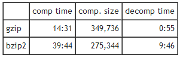
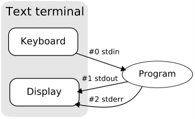

<!DOCTYPE html>

<!-- Mirrored from www.bogotobogo.com/python/python_files.php by HTTrack Website Copier/3.x [XR&CO'2014], Mon, 11 Dec 2017 10:08:14 GMT -->
<head>
  <title>Python Tutorial: Python Files and os.path - 2017</title>
  <meta content="Python Tutorial: Python Files and os.path" name="description" />
  <meta content="Python Tutorial: Python Files, character encoding, os.getcwd, os.path.join, os.path.split, glob.glob, close, open, read, unicode, ascii, utf-32, utf-16, utf-8, binary files, stdout, stderr, gzip vs bzip2, finally" name="keywords" />
  <meta http-equiv="content-type" content="text-html; charset=utf-8">
  <meta name="viewport" content="width=device-width, initial-scale=1">

  <link href="http://netdna.bootstrapcdn.com/bootstrap/3.0.0/css/bootstrap.no-icons.min.css" rel="stylesheet">
  <link href="http://netdna.bootstrapcdn.com/font-awesome/4.0.3/css/font-awesome.css" rel="stylesheet">
  <link rel="stylesheet" href="http://fonts.googleapis.com/css?family=Alice|Open+Sans:400,300,700">
  <link rel="stylesheet" href="../public/css/app.css">
  <link rel="stylesheet" href="../public/css/styles.css">
  <link rel="stylesheet" href="../public/css/bogostyleWidePreNew.css">
</head>

<body class="home">
    <nav class="navbar navbar-default navbar-fixed-top">
    <div class="container-fluid">      
      <div class="navbar-header">
        <!--<button type="button" class="navbar-toggle collapsed" data-toggle="collapse" data-target="#navbar" aria-expanded="false" aria-controls="navbar"> -->
        <button type="button" class="navbar-toggle collapsed" data-toggle="collapse" data-target=".navbar-collapse" aria-expanded="false" aria-controls="navbar"> 
          <span class="sr-only">Toggle navigation</span> 
          <span class="icon-bar"></span> 
          <span class="icon-bar"></span> 
          <span class="icon-bar"></span> 
        </button>
        <a class="navbar-brand" href="../index-2.html">BogoToBogo</a>
      </div>
      
      <div class="navbar-collapse collapse">
        
        <ul class="nav navbar-nav">
          <li class="active"><a href="../index-2.html">Home</a></li>
          <li><a href="../about_us.html">About</a></li>
          <li><a href="../Hadoop/BigData_hadoop_Install_on_ubuntu_single_node_cluster.html">Big Data</a></li>
          <li><a href="scikit-learn/Artificial-Neural-Network-ANN-1-Introduction.html">Machine Learning</a></li>
          <li><a href="../AngularJS/AngularJS_Introduction.html">AngularJS</a></li> 
          <li><a href="pytut.html">Python</a></li>
          <li><a href="../cplusplus/cpptut.html">C++</a></li>
          <li><a href="../DevOps/DevOps_Jenkins_Chef_Puppet_Graphite_Logstash.html">DevOps </a></li>
          <li><a href="../Algorithms/algorithms.html">Algorithms</a></li> 
          <li class="dropdown">
            <a href="#" class="dropdown-toggle" data-toggle="dropdown">More...<b class="caret"></b></a>
            <ul class="dropdown-menu">
           
              <li><a href="../Qt/Qt5_Creating_QtQuick2_QML_Application_Animation_A.html">Qt 5</a></li>                           
              <li><a href="../Android/android.html">Android</a></li>
              
              <li><a href="../Linux/linux_tips1.html">Linux</a></li>
              <li><a href="../Java/tutorials/on_java.html">Java</a></li>
              <li><a href="../CSharp/.netframework.html">CSharp</a></li>
              <li><a href="../VideoStreaming/videostreaming_etc.html">Video Streaming</a></li>
              <li><a href="../FFMpeg/ffmpeg_fade_in_fade_out_transitions_effects_filters_slideshow_concat.html">FFmpeg</a></li>
              <li><a href="../Matlab/Matlab_Tutorial_Manipulating_Audio_I_Reverse_Delay_Tone_Control_Changing_Speed_Removing_Vocals.html">Matlab</a></li>
              <li><a href="Django/Python_Django_Forums_Shared_Host.html">Django 1.8</a></li>
              <li><a href="../Laravel5/Laravel5_ToDo_List_Sample.html">Laravel 5.2</a></li>
              <li><a href="../RubyOnRails/RubyOnRails.html">Ruby On Rails</a></li>
              <li><a href="../HTML5/HTML5_Tutorial.html">HTML5 & CSS</a></li>
              <li><a href="../AmazingPlaces/index.html" target="_blank">
Earth</a> </li>
            </ul>
          </li>
        </ul>      
      </div>
    </div>  
  </nav>  

  <div id="main">
    <div class="container">
      <div class="row section featured topspace">
        <div class="row">
          <div class="col-sm-9 col-md-9 col-xs-9">
            <h2 class="section-title">Python Files and os.path
        <g:plusone></g:plusone></h2>
            <div class="icon-image">
                 
            </div>
            <div class="SocialLinks">
  <span class='st__large' displayText=''></span>
  <br><br>
  <div align="center">
  <span class='st_facebook_large' displayText='Facebook'></span>
  <span class='st_twitter_large' displayText='Tweet'></span>
  <span class='st_linkedin_large' displayText='LinkedIn'></span>
  </div>
  <br><br>
  <script type="text/javascript" src="http://w.sharethis.com/button/buttons.js"></script>
  <script type="text/javascript">stLight.options({publisher: "b9569c43-5f56-4501-92f0-4bf4aa8fceb0", doNotHash: false, doNotCopy: true, hashAddressBar: false});</script>
</div>

<div id="bookmarkshare">
  <script type="text/javascript">var addthis_config = {"data_track_clickback":true};</script>
  <a class="addthis_button" href="http://www.addthis.com/bookmark.php?v=250&amp;username=khhong7"></a>
  <script type="text/javascript" src="http://s7.addthis.com/js/250/addthis_widget.js#username=khhong7"></script>
</div>

<br>
<hr>
<br>


<!-- Google bogo1 ad -->
<!-- Google search box -->


<!-- bogo1 -->
<div>
  <script async src="http://pagead2.googlesyndication.com/pagead/js/adsbygoogle.js"></script>
  <!-- bogo1 -->
  <ins class="adsbygoogle"
     style="display:inline-block;width:728px;height:90px"
     data-ad-client="ca-pub-4716428189734495"
     data-ad-slot="6542308167"></ins>
  <script>
   (adsbygoogle = window.adsbygoogle || []).push({});
  </script>
</div>


<!-- Google search box -->
<div class="AdSenseSearch">
  bogotobogo.com site search:
  <form action="http://www.google.com/" id="cse-search-box" target="_blank">
    <div>
      <input type="hidden" name="cx" value="partner-pub-4716428189734495:1794050961" />
      <input type="hidden" name="ie" value="UTF-8" />
      <!--<input type="text" name="q" size="55" />-->
      <input type="text" name="q" size="" width="90%"/>
      <input type="submit" name="sa" value="Search" />
    </div>
  </form>
  <script type="text/javascript" src="http://www.google.com/coop/cse/brand?form=cse-search-box&amp;lang=en"></script>
</div>


<hr>
<div class="subtitle" id="directories">Directories</div>
<p>The module called <strong>os</strong> contains functions to get information on local directories, files, processes, and environment variables.</p>

<!-- Google bogo_square_ad -->
<div>
  <script type="text/javascript">
    google_ad_client = "ca-pub-4716428189734495";
    /* bogo_LargeRectangle_336_280 */
    google_ad_slot = "2712696561";
    google_ad_width = 336;
    google_ad_height = 280;
  </script>
  <script type="text/javascript"
    src="http://pagead2.googlesyndication.com/pagead/show_ads.js">
  </script>
</div>
<br>


<div class="subtitle_2nd" id="directories_getcwd">os.getcwd()</div>
<p>The <strong>current working directory</strong> is a property that Python holds in memory at all times. There is always a current working directory, whether we're in the Python Shell, running our own Python script from the command line, etc.</p>
<pre class="prettyprint">
>>> import os
>>> print(os.getcwd())
C:\Python32
>>> os.chdir('/test')
>>> print(os.getcwd())
C:\test
</pre>
<p>We used the <strong>os.getcwd()</strong> function to get the current working directory. When we run the graphical Python Shell, the current working directory starts as the directory where the Python Shell executable is. On Windows, this depends on where we installed Python; the default directory is c:\Python32. If we run the Python Shell from the command line, the current working directory starts as the directory we were in when we ran python3.</p>
<p>Then, we used the <strong>os.chdir()</strong> function to change the current working directory.
 Note that when we called the <strong>os.chdir()</strong> function, we used a Linux-style pathname (forward slashes, no drive letter) even though we're on Windows. This is one of the places where Python tries to paper over the differences between operating systems.</p>
<br/>
<br/>
<br/>
<br/>
<div class="subtitle_2nd" id="os_path_join">os.path.join()</div>
<p><strong>os.path</strong> contains functions for manipulating filenames and directory names.</p>
<pre class="prettyprint">
>>> import os
>>> print(os.path.join('/test/', 'myfile'))
/test/myfile
>>> print(os.path.expanduser('~'))
C:\Users\K
>>> print(os.path.join(os.path.expanduser('~'),'dir', 'subdir', 'k.py'))
C:\Users\K\dir\subdir\k.py
</pre>
<p>The <strong>os.path.join()</strong> function constructs a pathname out of one or more partial pathnames. In this case, it simply concatenates strings. Calling the <strong>os.path.join()</strong> function will add an extra slash to the pathname before joining it to the filename. </p>
<p>The <strong>os.path.expanduser()</strong> function will expand a pathname that uses <strong>~</strong> to represent the current user's home directory. This works on any platform where users have a home directory, including Linux, Mac OS X, and Windows. The returned path does not have a trailing slash, but the <strong>os.path.join()</strong> function doesn't mind.</p>
<p>Combining these techniques, we can easily construct pathnames for directories and files in the user's home directory. The <strong>os.path.join()</strong> function can take any number of arguments. </p>
<p>Note: we need to be careful about the string when we use <b>os.path.join</b>. If we use "/", it tells Python that we're using absolute path, and it overrides the path before it:</p>
<pre>
>>> import os
>>> print(os.path.join('/test/', '<font color="red">/</font>myfile'))
/myfile
</pre>
<p>As we can see the path "/test/" is gone!</p>
<br/>
<br/>
<br/>
<br/>
<div class="subtitle_2nd" id="os_path_split">os.path.split()</div>
<p><strong>os.path</strong> also contains functions to split full pathnames, directory names, and filenames into their constituent parts.</p>
<pre class="prettyprint">
>>> pathname = "/Users/K/dir/subdir/k.py"
>>> os.path.split(pathname)
('/Users/K/dir/subdir', 'k.py')
>>> (dirname, filename) = os.path.split(pathname)
>>> dirname
'/Users/K/dir/subdir'
>>> pathname
'/Users/K/dir/subdir/k.py'
>>> filename
'k.py'
>>> (shortname, extension) = os.path.splitext(filename)
>>> shortname
'k'
>>> extension
'.py'
</pre>
<p>The <strong>split()</strong> function splits a full pathname and returns a <strong>tuple</strong> containing the path and filename. The <strong>os.path.split()</strong> function does return multiple values. We assign the return value of the split function into a tuple of two variables. Each variable receives the value of the corresponding element of the returned tuple. The first variable, <strong>dirname</strong>, receives the value of the first element of the tuple returned from the <strong>os.path.split()</strong> function, the file path. The second variable, <strong>filename</strong>, receives the value of the second element of the tuple returned from the <strong>os.path.split()</strong> function, the filename.</p>
<p><strong>os.path</strong> also contains the <strong>os.path.splitext()</strong> function, which splits a filename and returns a tuple containing the filename and the file extension. We used the same technique to assign each of them to separate variables.</p>
<br/>
<br/>
<br/>
<br/>
<div class="subtitle_2nd" id="glob">glob.glob()</div>
<p>The <strong>glob</strong> module is another tool in the Python standard library. It's an easy way to get the contents of a directory programmatically, and it uses the sort of wildcards that we may already be familiar with from working on the command line.</p>
<pre class="prettyprint">
>>> import glob
>>> os.chdir('/test')
>>> import glob
>>> glob.glob('subdir/*.py')
['subdir\\tes3.py', 'subdir\\test1.py', 'subdir\\test2.py']
</pre>
<p>The <strong>glob</strong> module takes a wildcard and returns the path of all files and directories matching the wildcard. </p>
<br/>
<br/>
<div class="subtitle_2nd" id="file_metadata">File metadata</div>
<p>Every file system stores <strong>metadata</strong> about each file: creation date, last-modified date, file size, and so on. Python provides a single API to access this metadata. We don't need to open the file and all we need is the filename.</p>
<pre class="prettyprint">
>>> import os
>>> print(os.getcwd())
C:\test
>>> os.chdir('subdir')
>>> print(os.getcwd())
C:\test\subdir
>>> metadata = os.stat('test1.py')
>>> metadata.st_mtime
1359868355.9555483
>>> import time
>>> time.localtime(metadata.st_mtime)
time.struct_time(tm_year=2013, tm_mon=2, tm_mday=2, tm_hour=21, 
tm_min=12, tm_sec=35, tm_wday=5, tm_yday=33, tm_isdst=0)
>>> metadata.st_size
1844
</pre>
<p> Calling the <strong>os.stat()</strong> function returns an object that contains several different types of metadata about the file. <strong>st_mtime</strong> is the modification time, but it's in a format that isn't terribly useful. Actually, it's the number of seconds since the Epoch, which is defined as the first second of January 1st, 1970.</p>
<p>The <strong>time</strong> module is part of the Python standard library. It contains functions to convert between different time representations, format time values into strings, and fiddle with timezones.</p>
<p>The <strong>time.localtime()</strong> function converts a time value from seconds-since-the-Epoch (from the <strong>st_mtime</strong> property returned from the <strong>os.stat()</strong> function) into a more useful structure of year, month, day, hour, minute, second, and so on. This file was last modified on Feb 2, 2013, at around 9:12 PM.</p>
<p>The <strong>os.stat()</strong> function also returns the size of a file, in the <strong>st_size</strong> property. The file "test1.py" is 1844 bytes.</p>
<br/>
<br/>
<div class="subtitle_2nd" id="abs_path">os.path.realpath() - Absolute pathname</div>
<p>The <strong>glob.glob()</strong> function returned a list of <strong>relative</strong> pathnames. If weu want to construct an <strong>absolute</strong> pathname - i.e. one that includes all the directory names back to the root directory or drive letter - then we'll need the <strong>os.path.realpath()</strong> function.</p>
<pre class="prettyprint">
>>> import os
>>> print(os.getcwd())
C:\test\subdir
>>> print(os.path.realpath('test1.py'))
C:\test\subdir\test1.py
</pre>
<br/>
<br/>
<div class="subtitle_2nd" id="expandvars">os.path.expandvars() - Env. variable</div>
<p>The <strong>expandvars</strong> function inserts environment variables into a filename.</p>
<pre class="prettyprint">
>>> import os
>>> os.environ['SUBDIR'] = 'subdir'
>>> print(os.path.expandvars('/home/users/K/$SUBDIR'))
/home/users/K/subdir
</pre>
<br/>
<br/>
<br/>
<br/>
<div class="subtitle" id="Opening_Files">Opening Files</div>
<p>To open a file, we use built-in <strong>open()</strong> function:</p>
<pre class="prettyprint">
myfile = open('mydir/myfile.txt', 'w')
</pre>
<p>The <strong>open()</strong> function takes a <strong>filename</strong> as an argument. Here the filename is <strong>mydir/myfile.txt</strong>, and the next argument is a processing <strong>mode</strong>. The mode is usually the string <strong>'r'</strong> to open  text input (this is the default mode), <strong>'w'</strong> to create and open open for text output. The string <strong>'a'</strong> is to open for appending text to the end. The mode argument can specify additional options: adding a <strong>'b'</strong> to the mode string allows for <strong>binary</strong> data, and adding a <strong>+</strong> opens the file for <strong>both</strong> input and output.</p>
<p>The table below lists several combination of the processing modes:</p>
<br/>
<table border="2" cellpadding="5">
<tr>
<th>Mode</th>
<th>Description</th>
</tr>
<tr>
<td>r</td>
<td>Opens a file for reading only. The file pointer is placed at the beginning of the file. This is the default mode.</td>
</tr>
<tr>
<td>rb</td>
<td>Opens a file for reading only in binary format. The file pointer is placed at the beginning of the file. This is the default mode.</td>
</tr>
<tr>
<td>r+</td>
<td>Opens a file for both reading and writing. The file pointer will be at the beginning of the file.</td>
</tr>
<tr>
<td>rb+</td>
<td>Opens a file for both reading and writing in binary format. The file pointer will be at the beginning of the file.</td>
</tr>
<tr>
<td>w</td>
<td>Opens a file for writing only. Overwrites the file if the file exists. If the file does not exist, creates a new file for writing.</td>
</tr>
<tr>
<td>wb</td>
<td>Opens a file for writing only in binary format. Overwrites the file if the file exists. If the file does not exist, creates a new file for writing.</td>
</tr>
<tr>
<td>w+</td>
<td>Opens a file for both writing and reading. Overwrites the existing file if the file exists. If the file does not exist, creates a new file for reading and writing.</td>
</tr>
<tr>
<td>a</td>
<td>Opens a file for appending. The file pointer is at the end of the file if the file exists. That is, the file is in the append mode. If the file does not exist, it creates a new file for writing.</td>
</tr>
<tr>
<td>ab</td>
<td>Opens a file for appending in binary format. The file pointer is at the end of the file if the file exists. That is, the file is in the append mode. If the file does not exist, it creates a new file for writing.</td>
</tr>
<tr>
<td>a+</td>
<td>Opens a file for both appending and reading. The file pointer is at the end of the file if the file exists. The file opens in the append mode. If the file does not exist, it creates a new file for reading and writing.</td>
</tr>
<tr>
<td>ab+</td>
<td>Opens a file for both appending and reading in binary format. The file pointer is at the end of the file if the file exists. The file opens in the append mode. If the file does not exist, it creates a new file for reading and writing.</td>
</tr>
</table>
<br/>
<p>There are things we should know about the <strong>filename</strong>:</p>
<ol>
<li>It's not just the name of a file. It's a combination of a directory path and a filename. In Python, whenever we need a <strong>filename</strong>, we can include some or all of a directory path as well.</li> <br/>
<li>The directory path uses a forward slash without mentioning operating system. Windows uses backward slashes to denote subdirectories, while Linux use forward slashes. But in Python, forward slashes always work, even on Windows.</li><br/>
<li>The directory path does not begin with a slash or a drive letter, so it is called a relative path. </li><br/>
<li>It's a string. All modern operating systems use Unicode to store the names of files and directories. Python 3 fully supports non-ASCII pathnames.</li><br/>
</ol>
<br/>
<br/>
<div class="subtitle" id="character_encoding">Character Encoding</div>
<p>A string is a sequence of Unicode characters. A file on disk is not a sequence of Unicode characters but rather a sequence of bytes. So if we read a file from disk, how does Python convert that sequence of bytes into a sequence of characters?<br/> Internally, Python decodes the bytes according to a specific character encoding algorithm and returns a sequence of Unicode character string.</p>
<p>I have a file ('Alone.txt'):</p>
<pre class="prettyprint">
나 혼자 (Alone) - By Sistar
추억이 이리 많을까 넌 대체 뭐할까
아직 난 이래 혹시 돌아 올까 봐
</pre>
<p>Let's try to read the file:</p>
<pre>
>>> file = open('Alone.txt')
>>> str = file.read()
Traceback (most recent call last):
  File "<pyshell#7>", line 1, in <module>
    str = file.read()
  File "C:\Python32\lib\encodings\<font color="red">cp1252.py</font>", line 23, in decode
    return codecs.charmap_decode(input,self.errors,decoding_table)[0]
UnicodeDecodeError: 'charmap' codec can't decode byte 0x90 in position 6: character maps to <undefined>
>>> 
</undefined></module></pyshell#7></pre>
<p>What just happened? <br/>
We didn't specify a character encoding, so Python is forced to use the default encoding.<br/>
 What's the default encoding? If we look closely at the traceback, we can see that it's crashing in cp1252.py, meaning that Python is using <strong>CP-1252</strong> as the default encoding here. (CP-1252 is a common encoding on computers running Microsoft Windows.) The CP-1252 character set doesn't support the characters that are in this file, so the read fails with an  <strong>UnicodeDecodeError</strong>.</p>
<p>Actually, when I display the Korean character, I had to put the following lines of html to the header section:</p>
<pre>
&lt;!--
  &lt;meta http-equiv="Content-Type"
 content="text/html; charset=ISO-8859-1" /&gt; --&gt;
 &lt;meta http-equiv="Content-Type" content="text/html; charset=<font color="red">utf-8"</font> /&gt;
</pre>
<br/>
<br/>
<div class="subtitle_2nd" id="character_encoding_utf">ASCII and Unicode</div>
<p>There are character encodings for each major language in the world. Since each language is different, and memory and disk space have historically been expensive, each character encoding is optimized for a particular language. Each encoding using the same numbers (<strong>0-255</strong>) to represent that language's characters. For instance, the <strong>ASCII</strong> encoding, which stores English characters as numbers ranging from 0 to 127. (<strong>65</strong> is capital <strong>A</strong>, <strong>97</strong> is lowercase <strong>a</strong>). English has a very simple alphabet, so it can be completely expressed in less than 128 numbers. </p>
<p>Western European languages like French, Spanish, and German have more letters than English. The most common encoding for these languages is <strong>CP-1252</strong>. The CP-1252 encoding shares characters with ASCII in the <strong>0-127</strong> range, but then extends into the <strong>128-255</strong> range for characters like <strong>ñ</strong>, <strong>ü</strong>, etc. It's still a single-byte encoding, though; the highest possible number, 255, still fits in one byte.</p>
<p>Then there are languages like Chinese and Korean, which have so many characters that they require multiple-byte character sets. That is, each character is represented by a two-byte number (<strong>0-65535</strong>). But different multi-byte encodings still share the same problem as different single-byte encodings, namely that they each use the same numbers to mean different things. It's just that the range of numbers is broader, because there are many more characters to represent.</p>
<p><strong>Unicode</strong> is designed to represent every character from every language. Unicode represents each letter, character, or ideograph as a 4-byte number. Each number represents a unique character used in at least one of the world's languages. There is exactly 1 number per character, and exactly 1 character per number. Every number always means just one thing; there are no <strong>modes</strong> to keep track of. <strong>U+0061</strong> is always <strong>'a'</strong>, even if a language doesn't have an <strong>'a'</strong> in it.</p>
<p>This appears to be a great idea. One encoding to rule them all. Multiple languages per document. No more <strong>mode switching</strong> to switch between encodings mid-stream. But Four bytes for every single character? That is really wasteful, especially for languages like English and Spanish, which need less than one byte (256 numbers) to express every possible character. </p>
<br/>
<div class="subtitle_2nd" id="character_encoding_utf32">Unicode - UTF-32</div>
<p>There is a Unicode encoding that uses <strong>four bytes</strong> per character. It's called <strong>UTF-32</strong>, because 32 bits = 4 bytes. UTF-32 is a straightforward encoding; it takes each Unicode character (a 4-byte number) and represents the character with that same number. This has some advantages, the most important being that we can find the Nth character of a string in constant time, because the Nth character starts at the 4xNth byte. It also has several disadvantages, the most obvious being that it takes four freaking bytes to store every freaking character.</p>
<br/>
<div class="subtitle_2nd" id="character_encoding_utf16">Unicode - UTF-16</div>
<p>Even though there are a lot of Unicode characters, it turns out that most people will never use anything beyond the first 65535. Thus, there is another Unicode encoding, called <strong>UTF-16</strong> (because 16 bits = 2 bytes). UTF-16 encodes every character from <strong>0-65535</strong> as <strong>two bytes</strong>, then uses some dirty hacks if we actually need to represent the rarely-used Unicode characters beyond 65535. Most obvious advantage: UTF-16 is twice as space-efficient as UTF-32, because every character requires only two bytes to store instead of four bytes. And we can still easily find the Nth character of a string in constant time.</p>
<p>But there are also non-obvious disadvantages to both UTF-32 and UTF-16. Different computer systems store individual bytes in different ways. That means that the character U+4E2D could be stored in UTF-16 as either 4E 2D or 2D 4E, depending on whether the system is big-endian or little-endian. (For UTF-32, there are even more possible byte orderings.) </p>
<p>To solve this problem, the multi-byte Unicode encodings define a <strong>Byte Order Mark</strong>, which is a special non-printable character that we can include at the beginning of our document to indicate what order our bytes are in. For UTF-16, the Byte Order Mark is U+FEFF. If we receive a UTF-16 document that starts with the bytes FF FE, we know the byte ordering is one way; if it starts with FE FF, we know the byte ordering is reversed.</p>
<p>Still, UTF-16 isn't exactly ideal, especially if we're dealing with a lot of ASCII characters. If we think about it, even a Chinese web page is going to contain a lot of ASCII characters - all the elements and attributes surrounding the printable Chinese characters. Being able to find the Nth character in constant time is nice, but we can't guarantee that every character is exactly two bytes, so we can't really find the Nth character in constant time unless we maintain a separate index. </p>
<br/>
<div class="subtitle_2nd" id="character_encoding_utf8">Unicode - UTF-8</div>
<p><strong>UTF-8</strong> is a variable-length encoding system for Unicode. That is, different characters take up a different number of bytes. For <strong>ASCII</strong> characters (A-Z) UTF-8 uses just <strong>one byte</strong> per character. In fact, it uses the exact same bytes; the first 128 characters (0-127) in UTF-8 are indistinguishable from ASCII. <strong>Extended Latin</strong> characters like ñ and ü end up taking <strong>two bytes</strong>. (The bytes are not simply the Unicode code point like they would be in UTF-16; there is some serious bit-twiddling involved.) <strong>Chinese</strong> characters like <strong>王</strong> end up taking <strong>three bytes</strong>. The rarely-used <strong>astral plane</strong> characters take <strong>four bytes</strong>.</p>
<p><strong>Disadvantages</strong>: because each character can take a different number of bytes, finding the Nth character is an O(N) operation - that is, the longer the string, the longer it takes to find a specific character. Also, there is bit-twiddling involved to encode characters into bytes and decode bytes into characters.</p>
<p><strong>Advantages</strong>: <font color="red">super-efficient encoding of common ASCII characters</font>. No worse than UTF-16 for extended Latin characters. Better than UTF-32 for Chinese characters. Also there are no byte-ordering issues. A document encoded in utf-8 uses the exact same stream of bytes on any computer.</p>
<br/>
<br/>
<br/>
<div class="subtitle" id="stream_object">File Object</div>
<p>The <strong>open()</strong> function returns a <strong>file object</strong>, which has methods and attributes for getting information about and manipulating a stream of characters.</p>
<pre class="prettyprint">
>>> file = open('Alone.txt')
>>> file.mode
'r'
>>> file.name
'Alone.txt'
>>> file.encoding
'cp1252'
</pre>
<p>If we specify the encoding:</p>
<pre>
>>> # -*- coding: utf-8 -*-
>>> file = open('Alone.txt', <font color="red">encoding='utf-8'</font>)
>>> file.encoding
'utf-8'
>>> str = file.read()
>>> str
'나 혼자 (Alone) - By Sistar\n추억이 이리 많을까 넌 대체 뭐할까\n아직 난 이래 혹시 돌아 올까 봐\n'
</pre>
<p>The first line was <strong>encoding declaration</strong> which needed to make the Python aware of Korean.</p>
<p>The <strong>name</strong> attribute reflects the name we passed in to the <strong>open()</strong> function when we opened the file. The <strong>encoding</strong> attribute reflects the encoding we passed in to the <strong>open()</strong> function. If we didn't specify the encoding when we opened the file, then the encoding attribute will reflect <strong>locale.getpreferredencoding()</strong>. The <strong>mode</strong> attribute tells us in which mode the file was opened. We can pass an optional mode parameter to the <strong>open()</strong> function. We didn't specify a mode when we opened this file, so Python defaults to <strong>'r'</strong>, which means <strong>open for reading only, in text mode</strong>. The file <strong>mode</strong> serves several purposes; different modes let us write to a file, append to a file, or open a file in binary mode.</p>
<br/>
<div class="subtitle_2nd" id="stream_object_read">read()</div>
<pre class="prettyprint">
>>> file = open('Alone.txt', encoding='utf-8')
>>> str = file.read()
>>> str
'나 혼자 (Alone) - By Sistar\n추억이 이리 많을까 넌 대체 뭐할까\n아직 난 이래 혹시 돌아 올까 봐\n'
>>> file.read()
''
</pre>
<p>Reading the file again does not raise an exception. Python does not consider reading past end-of-file to be an error; it simply returns an empty string.</p>
<pre class="prettyprint">
>>> file.read()
''
</pre>
<p>Since we're still at the end of the file, further calls to the stream object's <strong>read()</strong> method simply return an empty string.</p>
<pre class="prettyprint">
>>> file.seek(0)
0
</pre>
<p>The <strong>seek()</strong> method moves to a specific byte position in a file.</p>
<pre class="prettyprint">
>>> file.read(10)
'나 혼자 (Alon'
>>> file.seek(0)
0
>>> file.read(15)
'나 혼자 (Alone) - '
>>> file.read(1)
'B'
>>> file.read(10)
'y Sistar\n추'
>>> file.tell()
34
</pre>
<p>The <strong>read()</strong> method can take an optional parameter, the number of characters to read. We can also read one character at a time. The <strong>seek()</strong> and <strong>tell()</strong> methods always count bytes, but since we opened this file as text, the <strong>read()</strong> method counts characters. Korean characters require multiple bytes to encode in UTF-8. The English characters in the file only require one byte each, so we might be misled into thinking that the <strong>seek()</strong> and <strong>read()</strong> methods are counting the same thing. But that's only true for some characters.</p>
<br/>
<div class="subtitle_2nd" id="stream_object_close">close()</div>
<p>It's important to close files as soon as we're done with them because open files consume system resources, and depending on the file mode, other programs may not be able to access them.</p>
<pre class="prettyprint">
>>> file.close()
>>> file.read()
Traceback (most recent call last):
  File "<pyshell#37>", line 1, in <module>
    file.read()
ValueError: I/O operation on closed file.
>>> file.seek(0)
Traceback (most recent call last):
  File "<pyshell#38>", line 1, in <module>
    file.seek(0)
ValueError: I/O operation on closed file.
>>> file.tell()
Traceback (most recent call last):
  File "<pyshell#39>", line 1, in <module>
    file.tell()
ValueError: I/O operation on closed file.
>>> file.close()
>>> file.closed
True
</module></pyshell#39></module></pyshell#38></module></pyshell#37></pre>
<p>
<ol>
<li>We can't read from a closed file; that raises an <strong>IOError</strong> exception.</li><br/>
<li>We can't seek in a closed file either.</li><br/>
<li>There's no current position in a closed file, so the <strong>tell()</strong> method also fails.</li><br/>
<li>Calling the <strong>close()</strong> method on a stream object whose file has been closed does not raise an exception. It's just a <strong>no-op</strong>.</li><br/>
<li>Closed stream objects do have one useful attribute: the <strong>closed</strong> attribute will confirm that the file is closed.</li><br/>
</ol>
<br/>
<div class="subtitle_2nd" id="stream_object_with">"with" statement</div>
<p>Stream objects have an explicit <strong>close()</strong> method, but what happens if our code has a bug and crashes before we call <strong>close()</strong>? That file could theoretically stay open for longer than necessary.</p>
<p>Probably, we could use the <strong>try..finally</strong> block. But we have a cleaner solution, which is now the preferred solution in Python 3: the <strong>with</strong> statement:</p>
<pre>
>>> <font color="red">with</font> open('Alone.txt', encoding='utf-8') as file:
	file.seek(16)
	char = file.read(1)
	print(char)

	
16
o
</pre>
<p>The code above never calls <strong>file.close()</strong>. The <strong>with</strong> statement starts a code block, like an <strong>if</strong> statement or a <strong>for loop</strong>. Inside this code block, we can use the variable <strong>file</strong> as the <strong>stream object</strong> returned from the call to <strong>open()</strong>. All the regular stream object methods are available - <strong>seek()</strong>, <strong>read()</strong>, whatever we need. When the with block ends, Python calls <strong>file.close()</strong> <font color="red">automatically</font>.

<p>Note that no matter how or when we exit the with block, Python will close that file even if we exit it via an unhandled exception. In other words, even if our code raises an exception and our entire program comes to a halt, that file will get closed. Guaranteed.</p>
<p>Actually, the <strong>with</strong> statement creates a <strong>runtime context</strong>. In these examples, the stream object acts as a context manager. Python creates the stream object <strong>file</strong> and tells it that it is entering a runtime context. When the with code block is completed, Python tells the stream object that it is exiting the runtime context, and the stream object calls its own <strong>close()</strong> method. </p>
<p>There's nothing file-specific about the with statement; it's just a generic framework for creating runtime contexts and telling objects that they're entering and exiting a runtime context. If the object in question is a stream object, then it  closes the file automatically. But that behavior is defined in the stream object, not in the with statement. There are lots of other ways to use context managers that have nothing to do with files. </p>
<br/>
<div class="subtitle_2nd" id="stream_object_reading_one_line">Reading lines one by one</div>
<p> A line of text is a sequence of characters delimited by what exactly? Well, it's complicated, because text files can use several different characters to mark the end of a line. Every operating system has its own convention. Some use a carriage return character(\r), others use a line feed character(\n), and some use both characters(\r\n) at the end of every line.</p>
<p>However, Python handles line endings automatically by default. Python will figure out which kind of line ending the text file uses and and it will all the work for us.</p>
<pre class="prettyprint">
# line.py

lineCount = 0
with open('Daffodils.txt', encoding='utf-8') as file:
    for line in file:
        lineCount += 1
        print('{:&lt;5} {}'.format(lineCount, line.rstrip())) 
</pre>
<p>If we run it:</p>
<pre class="prettyprint">
C:\TEST&gt; python line.py
1     I wandered lonely as a cloud
2     That floats on high o'er vales and hills,
3     When all at once I saw a crowd,
4     A host, of golden daffodils;
</pre>
<br/>
<ol>
<li>Using the with pattern, we safely open the file and let Python close it for us.</li><br/>
<li>To read a file one line at a time, use a for loop. That's it. Besides having explicit methods like <strong>read()</strong>, the stream object is also an iterator which spits out a single line every time we ask for a value.</li><br/>
<li>Using the <strong>format()</strong> string method, we can print out the line number and the line itself. The format specifier <strong>{:&lt;5}</strong> means <strong>print this argument left-justified within 5 spaces</strong>. The a_line variable contains the complete line, carriage returns and all. The <strong>rstrip()</strong> string method removes the trailing whitespace, including the carriage return characters.</li><br/>
</ol>
<br/>
<br/>
<div class="subtitle" id="writing">write()</div>
<p>We can write to files in much the same way that we read from them. First, we open a file and get a file object, then we use methods on the stream object to write data to the file, then close the file.</p>
<p>The method <strong>write()</strong> writes a string to the file. There is no return value. Due to buffering, the string may not actually show up in the file until the <strong>flush()</strong> or <strong>close()</strong> method is called.</p>
<p>To open a file for writing, use the <strong>open()</strong> function and specify the write mode. There are two file modes for writing as listed in the earlier table:</p>
<ol>
<li><strong>write</strong> mode will overwrite the file when the mode=<strong>'w'</strong> of the <strong>open()</strong> function.</li><br/>
<li><strong>append</strong> mode will add data to the end of the file when the mode=<strong>'a'</strong> of the <strong>open()</strong> function.</li><br/>
</ol>
<p>
We should always close a file as soon as we're done writing to it, to release the file handle and ensure that the data is actually written to disk. As with reading data from a file, we can call the stream object's <strong>close()</strong> method, or we can use the <strong>with</strong> statement and let Python close the file for us. </p>
<pre class="prettyprint">
>>> with open('myfile', mode='w', encoding='utf-8') as file:
	file.write('Copy and paste is a design error.')

>>> with open('myfile', encoding='utf-8') as file:
	print(file.read())
	
Copy and paste is a design error.
>>> 
>>> with open('myfile', mode='a', encoding='utf-8') as file:
	file.write('\nTesting shows the presence, not the absence of bugs.')

>>> with open('myfile', encoding='utf-8') as file:
	print(file.read())

Copy and paste is a design error.	
Testing shows the presence, not the absence of bugs.
</pre>
<p>
We startedby creating the new file <strong>myfile</strong>, and opening the file for writing. The mode=<strong>'w'</strong> parameter means open the file for writing. 
We can add data to the newly opened file with the <strong>write()</strong> method of the file object returned by the <strong>open()</strong> function. After the <strong>with</strong> block ends, Python automatically closes the file.</p>
<p>Then, with mode=<strong>'a'</strong> to append to the file instead of overwriting it. Appending will never harm the existing contents of the file. Both the original line we wrote and the second line we appended are now in the file. Also note that neither carriage returns nor line feeds are included. Note that we wrote a line feed with the <strong>'\n'</strong> character. </p>
</p>
<br/>
<br/>
<br/>
<div class="subtitle" id="binary_files">Binary files</div>
<br/>

<br/>
<p>Picture file is not a text file. Binary files may contain any type of data, encoded in binary form for computer storage and processing purposes.</p>
<p><strong>Binary files</strong> are usually thought of as being a sequence of <strong>bytes</strong>, which means the binary digits (bits) are grouped in eights. Binary files typically contain bytes that are intended to be interpreted as something other than text characters. Compiled computer programs are typical examples; indeed, compiled applications (object files) are sometimes referred to, particularly by programmers, as binaries. But binary files can also contain images, sounds, compressed versions of other files, etc. - in short, any type of file content whatsoever.<br/>
Some binary files contain <strong>headers</strong>, blocks of <strong>metadata</strong> used by a computer program to interpret the data in the file. For example, a <strong>GIF</strong> file can contain multiple images, and headers are used to identify and describe each block of image data. If a binary file does not contain any headers, it may be called a flat binary file. But the presence of headers are also common in plain text files, like <strong>email</strong> and <strong>html</strong> files.  - <a href="http://en.wikipedia.org/wiki/Binary_file" target="_blank">wiki</a> </p>
<pre>
>>> my_image = open('python_image.png', mode='r<font color="red">b</font>')
>>> my_image.mode
'rb'
>>> my_image.name
'python_image.png'
>>> my_image.encoding
Traceback (most recent call last):
  File "<pyshell#41>", line 1, in <module>
    my_image.encoding
AttributeError: '_io.BufferedReader' object has no attribute 'encoding'
</module></pyshell#41></pre>
<p>Opening a file in <strong>binary mode</strong> is simple but subtle. The only difference from opening it in text mode is that the mode parameter contains a <strong>'b'</strong> character. The stream object we get from opening a file in binary mode has many of the same attributes, including mode, which reflects the mode parameter we passed into the <strong>open()</strong> function. Binary file objects also have a name attribute, just like text file objects.</p>
<p>However, a binary stream object has no encoding attribute. That's because we're reading <strong>bytes</strong>, <font color="black">not</font> <strong>strings</strong>, so there's no conversion for Python to do.</p>
<p>Let's continue to do more investigation on the binary:</p>
<pre class="prettyprint">
>>> my_image.tell()
0
>>> image_data = my_image.read(5)
>>> image_data
b'\x89PNG\r'
>>> type(image_data)
<class 'bytes'>
>>> my_image.tell()
5
>>> my_image.seek(0)
0
>>> image_data = my_image.read()
>>> len(image_data)
14922
</class></pre>
<p>Like text files, we can read binary files a little bit at a time. As mentioned previously, there's a crucial difference. We're reading bytes, not strings. Since we opened the file in <strong>binary mode</strong>, the <strong>read()</strong> method takes the number of <strong>bytes</strong> to read, not the number of characters.</p>
<p>That means that there's never an unexpected mismatch between the number we passed into the <strong>read()</strong> method and the position index we get out of the <strong>tell()</strong> method. The <strong>read()</strong> method reads bytes, and the <strong>seek()</strong> and <strong>tell()</strong> methods track the number of bytes read. </p>
<br/>
<br/>
<br/>
<div class="subtitle" id="reading_files">read()</div>
<br/>
<div class="subtitle_2nd" id="reading_files">size parameter</div>
<p>We can read a stream object is with a <strong>read()</strong> method that takes an optional <strong>size</strong> parameter. Then, the <strong>read()</strong> method returns a string of that size. When called with no size parameter, the <strong>read()</strong> method should read everything there and return all the data as a single value. When called with a size parameter, it reads that much from the input source and returns that much data. When called again, it picks up where it left off and returns the next chunk of data.</p>
<pre class="prettyprint">
>>> import io
>>> my_string = 'C is quirky, flawed, and an enormous success. - Dennis Ritchie (1941-2011)'
>>> my_file = io.StringIO(my_string)
>>> my_file.read()
'C is quirky, flawed, and an enormous success. - Dennis Ritchie (1941-2011)'
>>> my_file.read()
''
>>> my_file.seek(0)
0
>>> my_file.read(10)
'C is quirk'
>>> my_file.tell()
10
>>> my_file.seek(10)
10
>>> my_file.read()
'y, flawed, and an enormous success. - Dennis Ritchie (1941-2011)'
</pre>
<p>The <strong>io</strong> module defines the <strong>StringIO</strong> class that we can use to treat a string in memory as a file. 
To create a stream object out of a string, create an instance of the <strong>io.StringIO()</strong> class and pass it the string we want to use as our <strong>file</strong> data. Now we have a stream object, and we can do all sorts of stream-like things with it.</p>
<p>Calling the <strong>read()</strong> method reads the entire file, which in the case of a <strong>StringIO</strong> object simply returns the original string.</p>
<p>We can explicitly seek to the beginning of the string, just like seeking through a real file, by using the <strong>seek()</strong> method of the <strong>StringIO</strong> object.
We can also read the string in chunks, by passing a size parameter to the <strong>read()</strong> method.</p>
<br/>
<br/>
<div class="subtitle_2nd" id="reading_compressed files">Reading compressed files</div>
<p>The Python standard library contains modules that support reading and writing <strong>compressed</strong> files. There are a number of different compression schemes. The two most popular on non-Windows systems are <strong>gzip</strong> and <strong>bzip2</strong>. </p>
<p>Though it depends on the intended application. <strong>gzip</strong> is very fast and has small memory footprint. <strong>bzip2</strong> can't compete with <strong>gzip</strong> in terms of speed or memory usage. <strong>bzip2</strong> has notably better compression ratio than  <strong>gzip</strong>, which has to be the reason for the popularity of <strong>bzip2</strong>; it is slower than <strong>gzip</strong> especially in decompression and uses more memory. </p>
<br/>

<br/>
<p>Data from <a href="http://jeremy.zawodny.com/blog/archives/000953.html" target="_blank">gzip vs bzip2</a>.</p>
<p>The <strong>gzip</strong> module lets us create a stream object for reading or writing a <strong>gzip-compressed</strong> file. The stream object it gives us supports the <strong>read()</strong> method if we opened it for reading or the <strong>write()</strong> method if we opened it for writing. That means we can use the methods we've already learned for regular files to directly read or write a gzip-compressed file, without creating a temporary file to store the decompressed data.</p>
<pre class="prettyprint">
>>> import gzip
>>> with gzip.open('myfile.g', mode='wb') as compressed:
	compressed.write('640K ought to be enough for anybody (1981). - Bill Gates(1981)'.encode('utf-8'))

$ ls -l myfile.gz
-rwx------+ 1 Administrators None 82 Jan  3 22:38 myfile.gz

$ gunzip myfile.gz

$ cat myfile
640K ought to be enough for anybody (1981). - Bill Gates(1981)
</pre>
<p>We should always open gzipped files in binary mode. (Note the  <strong>'b' </strong> character in the mode argument.)
 The gzip file format includes a fixed-length header that contains some metadata about the file, so it's inefficient for extremely small files.</p>
<p>The <strong>gunzip</strong> command decompresses the file and stores the contents in a new file named the same as the compressed file but without the <strong>.gz</strong> file extension. 
The cat command displays the contents of a file. This file contains the string we wrote directly to the compressed file <strong>myfile.gz</strong> from within the Python Shell.</p>
<br/>
<br/>
<br/>
<div class="subtitle" id="stdout_stderr">stdout and stderr</div>
<br/><br/>

<p>Picture from <a href="http://en.wikipedia.org/wiki/Standard_streams" target="_blank">wiki</a>
<br/><br/>
<p><strong>stdin</strong>, <strong>stdout</strong>, and <strong>stderr</strong> are <strong>pipes</strong> that are built into every system such as Linux and MacOSX . When we call the <strong>print()</strong> function, the thing we're printing is sent to the <strong>stdout</strong> pipe. When our program crashes and prints out a traceback, it goes to the <strong>stderr</strong> pipe. By default, both of these pipes are just connected to the terminal. When our program prints something, we see the output in our terminal window, and when a program crashes, we see the traceback in our terminal window too. In the graphical Python Shell, the <strong>stdout</strong> and <strong>stderr</strong> pipes default to our <strong>IDE </strong> Window.</p>
<pre class="prettyprint">
>>> for n in range(2):
	print('Java is to JavaScript what Car is to Carpet')
	
Java is to JavaScript what Car is to Carpet
Java is to JavaScript what Car is to Carpet

>>> import sys
>>> for n in range(2):
	s = sys.stdout.write('Simplicity is prerequisite for reliability. ')
	
Simplicity is prerequisite for reliability. Simplicity is prerequisite for reliability. 
	
>>> for n in range(2):
	s = sys.stderr.write('stderr ')
	
stderr stderr
</pre>
<p>The <strong>stdout</strong> is defined in the <strong>sys</strong> module, and it is a stream object. Calling its <strong>write()</strong> function will print out whatever string we give, then return the length of the output. In fact, this is what the <strong>print()</strong> function really does; it adds a carriage return to the end of the string we're printing, and calls <strong>sys.stdout.write</strong>.</p>
<p><strong>sys.stdout</strong> and <strong>sys.stderr</strong> send their output to the same place: the Python ide if we're in , or the terminal if we're running Python from the command line. Like standard output, standard error does not add carriage returns for us. If we want carriage returns, we'll need to write carriage return characters.</p>
<p>Note that <strong>stdout</strong> and <strong>stderr</strong> are write-only. Attempting to call their read() method will always raise an <strong>IOError</strong>.</p>
<pre class="prettyprint">
>>> import sys
>>> sys.stdout.read()
Traceback (most recent call last):
  File "<pyshell#101>", line 1, in <module>
    sys.stdout.read()
AttributeError: read
</module></pyshell#101></pre>
<br/>
<br/>
<div class="subtitle_2nd" id="stdout_redirect">stdout redirect</div>
<p><strong>stdout</strong> and <strong>stderr</strong> only support writing but they're not constants. They're <strong>variables</strong>! That means we can assign them a new value to redirect their output.</p>
<pre class="prettyprint">
#redirect.py
import sys
class StdoutRedirect:
    def __init__(self, newOut):
        self.newOut = newOut

    def __enter__(self):
        self.oldOut = sys.stdout
        sys.stdout = self.newOut

    def __exit__(self, *args):
        sys.stdout = self.oldOut

print('X')
with open('output', mode='w', encoding='utf-8') as myFile:
    with StdoutRedirect(myFile):
	print('Y')
print('Z')
</pre>
<p>If we run it:</p>
<pre class="prettyprint">
$ python redirect.py
X
Z

$ cat output
Y
</pre>
<p>We actually have two <strong>with</strong> statements, one nested within the scope of the other. The outer with statement opens a utf-8-encoded text file named <strong>output</strong> for writing and assigns the stream object to a variable named <strong>myFile</strong>. </p>
<p>However, </p>
<pre class="prettyprint">
with StdoutRedirect(myFile):
</pre>
<p>Where's the as clause? <br/>
The <strong>with</strong> statement doesn't actually require one. We can have a <strong>with</strong> statement that doesn't assign the with context to a variable. In this case, we're only interested in the side effects of the <strong>StdoutRedirect</strong> context.</p>
<p>What are those side effects? <br/>
Take a look inside the <strong>StdoutRedirect</strong> class. This class is a custom context manager. Any class can be a context manager by defining two special methods: <strong>__enter__()</strong> and <strong>__exit__()</strong>.</p>
<p>The <strong>__init__()</strong> method is called immediately after an instance is created. It takes one parameter, the stream object that we want to use as standard output for the life of the context. This method just saves the stream object in an instance variable so other methods can use it later.</p>
<p>The <strong>__enter__()</strong> method is a special class method. Python calls it when entering a context (i.e. at the beginning of the <strong>with</strong> statement). This method saves the current value of <strong>sys.stdout</strong> in <strong>self.oldOut</strong>, then redirects standard output by assigning <strong>self.newOut</strong> to <strong>sys.stdout</strong>.</p>
<p><strong>__exit__()</strong> method is another special class method. Python calls it when exiting the context (i.e. at the end of the <strong>with</strong> statement). This method restores standard output to its original value by assigning the saved <strong>self.oldOut</strong> value to <strong>sys.stdout</strong>.</p>
<p>This <strong>with</strong> statement takes a comma-separated list of contexts. The comma-separated list acts like a series of nested with blocks. The first context listed is the outer block; the last one listed is the inner block. The first context opens a file; the second context redirects <strong>sys.stdout</strong> to the stream object that was created in the first context. Because this <strong>print()</strong> function is executed with the context created by the <strong>with</strong> statement, it will not print to the screen; it will write to the file <strong>output</strong>.</p>
<p>Now, the <strong>with</strong> code block is over. Python has told each context manager to do whatever it is they do upon exiting a context. The context managers form a last-in-first-out stack. Upon exiting, the second context changed <strong>sys.stdout</strong> back to its original value, then the first context closed the file named <strong>output</strong>. Since standard output has been restored to its original value, calling the <strong>print()</strong> function will once again print to the screen.</p>
<br/>
<br/>
<br/>
<br/>
<div class="subtitle_2nd" id="sample">File read/write - sample</div>
<p>The following example shows another example of reading and writing. It reads two data file (<a href="files/files_os/words.txt">linux word dictionary</a>, and <a <a href="files/files_os/domain.txt">top-level country domain names</a> such as .us, .ly etc.), and find the combination of the two for a given length of the full domain name.</p>
<pre class="prettyprint">
# Finding a combination of words and domain name (.ly, .us, etc).
LENGTH = 8

d_list = []
with open('domain.txt', 'r') as df:
    for d in df:
        d_list.append((d[0:2]).lower())
print d_list[:10]
d_list = ['us','ly']

wf = open('words.txt', 'r') 
w_list = wf.read().split()
wf.close()

print len(w_list)
print w_list[:10]

with open('domain_out.txt', 'w') as outf:
    for d in d_list:
        print '------- ', d, ' ------\n'
        outf.write('------- ' + d +  ' ------\n')
        for w in w_list:
            if w[-2:] == d and len(w) == LENGTH:
                print w[:-2] + '.' + d
                outf.write(w[:-2] + '.' + d + '\n')
</pre>
<p>Sample output:</p>
<pre class="prettyprint">
------- us ------
...
enormo.us
exiguo.us
fabulo.us
genero.us
glorio.us
gorgeo.us
...
virtuo.us
vitreo.us
wondro.us
------- ly ------
Connol.ly
Kimber.ly
Thessa.ly
abject.ly
abrupt.ly
absent.ly
absurd.ly
active.ly
actual.ly
...
</pre>
<br/>
<br/>
<br/>
<br/>
<div class="subtitle_2nd" id="finally">keyword finally</div>
<p>The keyword <b>finally</b> makes a difference if our code returns early:</p>
<pre>
try:
    code1()
except TypeError:
    code2()
    return None   
<font color="red">finally</font>:
    other_code()
</pre>
<p>With this code, the finally block is assured to run before the method returns. The cases when this could happen:</p>
<ol>
<li>If an exception is thrown inside the except block.</li>
<li>If an exception is thrown in run_code1() but it's not a TypeError.</li>
<li>Other control flow statements such as continue and break statements.</li>
</ol>
<p>However, without the finally block:</p>
<pre>
try:
    run_code1()
except TypeError:
    run_code2()
    return None   
other_code()  
</pre>
<p>the other_code() doesn't get run if there's an exception.</p>
<br/>
</p></p>
<div>
    
<div class="custom-disqus">
<!-- Disqus -->
<div id="disqus_thread"></div>
<script>
    /**
     *  RECOMMENDED CONFIGURATION VARIABLES: EDIT AND UNCOMMENT THE SECTION BELOW TO INSERT DYNAMIC VALUES FROM YOUR PLATFORM OR CMS.
     *  LEARN WHY DEFINING THESE VARIABLES IS IMPORTANT: https://disqus.com/admin/universalcode/#configuration-variables
     */
     
/* Disabling Disqus 4/26/2017
    var disqus_config = function () {
        this.page.url = window.location.href;
        this.page.identifier = document.title;
    };
    
    (function() {  // REQUIRED CONFIGURATION VARIABLE: EDIT THE SHORTNAME BELOW
        var d = document, s = d.createElement('script');
        
        s.src = '//bogotobogocom.disqus.com/embed.js';  // IMPORTANT: Replace EXAMPLE with your forum shortname!
        
        s.setAttribute('data-timestamp', +new Date());
        (d.head || d.body).appendChild(s);
    })();
 Disabling Disqus */    
</script>
<noscript>Please enable JavaScript to view the <a href="https://disqus.com/?ref_noscript" rel="nofollow">comments powered by Disqus.</a></noscript>

<!-- Disqus ends here -->
</div>

<br>
<br>
<br>
<br></div>
          </div>
          <div class="col-sm-3 col-md-3 col-xs-3">
  	    <div class="g-person" data-width="1" data-href="//plus.google.com/111664369941456137911" data-rel="author">
  	    </div>
            <div class="resume">
              <p>Ph.D. / Golden Gate Ave, San Francisco / Seoul National Univ / Carnegie Mellon / UC Berkeley / DevOps / Deep Learning / Visualization</p>
            </div>
  	    <div>
                
<div class="skyscraper">
  <br>


<div class="skyscraper">

  <div class="bogo-paypal">
    <!-- Paypal Donate button -->
    <p><i>Sponsor Open Source development activities and free contents for everyone.</i></p>

    <form action="https://www.paypal.com/cgi-bin/webscr" method="post" target="_top">
    <input type="hidden" name="cmd" value="_s-xclick">
    <input type="hidden" name="encrypted" value="-----BEGIN PKCS7-----MIIHRwYJKoZIhvcNAQcEoIIHODCCBzQCAQExggEwMIIBLAIBADCBlDCBjjELMAkGA1UEBhMCVVMxCzAJBgNVBAgTAkNBMRYwFAYDVQQHEw1Nb3VudGFpbiBWaWV3MRQwEgYDVQQKEwtQYXlQYWwgSW5jLjETMBEGA1UECxQKbGl2ZV9jZXJ0czERMA8GA1UEAxQIbGl2ZV9hcGkxHDAaBgkqhkiG9w0BCQEWDXJlQHBheXBhbC5jb20CAQAwDQYJKoZIhvcNAQEBBQAEgYC0In+maN+zseQtRj6SJqP9kj2LLvKf0yFklTm01uHY7UwgB3YJ0MZwvi6iERXfh4x2/KVYyMzY6elATG68c3gd6gb0Pqca380dXCg2Xua8jlW0pTZ3UabUNkpYi0iIwMSUsvWKbIw9eX8cBljOrYU1CXNuk46c0Yz2J3lGG+xCZTELMAkGBSsOAwIaBQAwgcQGCSqGSIb3DQEHATAUBggqhkiG9w0DBwQI23eIgGIDbFqAgaDMolOA+os0Y06D0j9NgHZJahDCSSl3deolhu6gz8hNd0SKwNAMBDPd5LBjJ7v6QgReCprB9L2E6CVpXZwgyLnzPC/wHbQG0Qd9sc/CqbiFy2FaJodDtPbRS8mOh+aHph0pNXgZ2kRA8uqVGIRF5gc0d6wqx7+NrPK5FehCMWoGGTmfTTMlykPVQhwDAY8+QFNSbCnqih5GXX62XpkmMJWFoIIDhzCCA4MwggLsoAMCAQICAQAwDQYJKoZIhvcNAQEFBQAwgY4xCzAJBgNVBAYTAlVTMQswCQYDVQQIEwJDQTEWMBQGA1UEBxMNTW91bnRhaW4gVmlldzEUMBIGA1UEChMLUGF5UGFsIEluYy4xEzARBgNVBAsUCmxpdmVfY2VydHMxETAPBgNVBAMUCGxpdmVfYXBpMRwwGgYJKoZIhvcNAQkBFg1yZUBwYXlwYWwuY29tMB4XDTA0MDIxMzEwMTMxNVoXDTM1MDIxMzEwMTMxNVowgY4xCzAJBgNVBAYTAlVTMQswCQYDVQQIEwJDQTEWMBQGA1UEBxMNTW91bnRhaW4gVmlldzEUMBIGA1UEChMLUGF5UGFsIEluYy4xEzARBgNVBAsUCmxpdmVfY2VydHMxETAPBgNVBAMUCGxpdmVfYXBpMRwwGgYJKoZIhvcNAQkBFg1yZUBwYXlwYWwuY29tMIGfMA0GCSqGSIb3DQEBAQUAA4GNADCBiQKBgQDBR07d/ETMS1ycjtkpkvjXZe9k+6CieLuLsPumsJ7QC1odNz3sJiCbs2wC0nLE0uLGaEtXynIgRqIddYCHx88pb5HTXv4SZeuv0Rqq4+axW9PLAAATU8w04qqjaSXgbGLP3NmohqM6bV9kZZwZLR/klDaQGo1u9uDb9lr4Yn+rBQIDAQABo4HuMIHrMB0GA1UdDgQWBBSWn3y7xm8XvVk/UtcKG+wQ1mSUazCBuwYDVR0jBIGzMIGwgBSWn3y7xm8XvVk/UtcKG+wQ1mSUa6GBlKSBkTCBjjELMAkGA1UEBhMCVVMxCzAJBgNVBAgTAkNBMRYwFAYDVQQHEw1Nb3VudGFpbiBWaWV3MRQwEgYDVQQKEwtQYXlQYWwgSW5jLjETMBEGA1UECxQKbGl2ZV9jZXJ0czERMA8GA1UEAxQIbGl2ZV9hcGkxHDAaBgkqhkiG9w0BCQEWDXJlQHBheXBhbC5jb22CAQAwDAYDVR0TBAUwAwEB/zANBgkqhkiG9w0BAQUFAAOBgQCBXzpWmoBa5e9fo6ujionW1hUhPkOBakTr3YCDjbYfvJEiv/2P+IobhOGJr85+XHhN0v4gUkEDI8r2/rNk1m0GA8HKddvTjyGw/XqXa+LSTlDYkqI8OwR8GEYj4efEtcRpRYBxV8KxAW93YDWzFGvruKnnLbDAF6VR5w/cCMn5hzGCAZowggGWAgEBMIGUMIGOMQswCQYDVQQGEwJVUzELMAkGA1UECBMCQ0ExFjAUBgNVBAcTDU1vdW50YWluIFZpZXcxFDASBgNVBAoTC1BheVBhbCBJbmMuMRMwEQYDVQQLFApsaXZlX2NlcnRzMREwDwYDVQQDFAhsaXZlX2FwaTEcMBoGCSqGSIb3DQEJARYNcmVAcGF5cGFsLmNvbQIBADAJBgUrDgMCGgUAoF0wGAYJKoZIhvcNAQkDMQsGCSqGSIb3DQEHATAcBgkqhkiG9w0BCQUxDxcNMTUwOTA2MTYwNDAxWjAjBgkqhkiG9w0BCQQxFgQUuyx70nay4O6eJQs3x4WiAm4/7DkwDQYJKoZIhvcNAQEBBQAEgYAN7yS/34G8dBK6CfFf5g4rQk/H8s7D/aUmIzppGWOoXR7nZuXQo99wSBlQsPdeFtB+a+NNapf6lC4ibUTjgSpbu1gscGHH4Y+QtXl03bt5qgaSoFhZsCJKubwRHPHGHDGVx+tQmQ2DHk09lXjjL61FpB6iqkiFFvw4vfixsoeI6g==-----END PKCS7-----
    ">
    <input type="image" src="https://www.paypalobjects.com/webstatic/en_US/btn/btn_donate_pp_142x27.png" border="0" name="submit" alt="PayPal - The safer, easier way to pay online!">
    
    </form>
    <p><i>Thank you.</i></p>
    <p>- <a href="../about_us.html" target="_blank">K Hong</a></p>
    <!-- End of Paypal Donate button   -->
  </div>


  <script async src="http://pagead2.googlesyndication.com/pagead/js/adsbygoogle.js"></script>
  <!-- bogo_skyscraper -->
  <ins class="adsbygoogle"
       style="display:inline-block;width:160px;height:600px"
       data-ad-client="ca-pub-4716428189734495"
       data-ad-slot="5321096966"></ins>
  <script>
  (adsbygoogle = window.adsbygoogle || []).push({});
  </script>


  <br><br>


</div></div>


<!-- Place this tag after the last widget tag. -->
<script type="text/javascript">
        (function() {
          var po = document.createElement('script'); po.type = 'text/javascript'; po.async = true;
          po.src = 'https://apis.google.com/js/platform.js';
          var s = document.getElementsByTagName('script')[0]; s.parentNode.insertBefore(po, s);
        })();
</script>
  	    </div>
  	    <div class="side_menu">
                
<br /><br />


<div>
<br><br>
<h1>Python tutorial</h1>
   <br><br>
   <a href="pytut.html">Python Home</a> 
   <br><br>
   <a href="python_introduction.html">Introduction</a> 
   <br><br>
   <a href="python_running.html">Running Python Programs (os, sys, import)</a> 
   <br><br>
   <a href="python_modules_idle.html">Modules and IDLE (Import, Reload, exec)</a> 
   <br><br>
   <a href="python_numbers_strings.html">Object Types - Numbers, Strings, and None</a> 
   <br><br>
   <a href="python_strings.html">Strings - Escape Sequence, Raw String, and Slicing</a> 
   <br><br>
   <a href="python_strings_method.html">Strings - Methods</a> 
   <br><br>
   <a href="python_string_formatting.html">Formatting Strings - expressions and method calls</a> 
   <br><br>
   <a href="python_files.html">Files and os.path</a> 
   <br><br>
   <a href="python_traversing_directory_tree_recursively_os_walk.html">Traversing directories recursively</a> 
   <br><br>
   <a href="python_subprocess_module.html">Subprocess Module</a> 
   <br><br>
   <a href="python_regularExpressions.html">Regular Expressions with Python</a> 
   <br><br>
   <a href="python_lists.html">Object Types - Lists</a> 
   <br><br>
   <a href="python_dictionaries_tuples.html">Object Types - Dictionaries and Tuples</a> 
   <br><br>
   <a href="python_functions_def.html">Functions def, *args, **kargs</a> 
   <br><br>
   <a href="python_functions_lambda.html">Functions lambda</a> 
   <br><br>
   <a href="python_functions_built_in.html">Built-in Functions</a> 
   <br><br>
   <a href="python_fncs_map_filter_reduce.html">map, filter, and reduce</a> 
   <br><br>
   <a href="python_decorators.html">Decorators</a> 
   <br><br>
   <a href="python_list_comprehension.html">List Comprehension</a> 
   <br><br>
   <a href="python_sets_union_intersection.html">Sets (union/intersection) and itertools - Jaccard coefficient and shingling to check plagiarism</a> 
   <br><br>
   <a href="python_hash_tables_hashing_dictionary_associated_arrays.html">Hashing (Hash tables and hashlib)</a> 
   <br><br>
   <a href="python_dictionary_comprehension_with_zip_from_list.html">Dictionary Comprehension with zip</a> 
   <br><br>
   <a href="python_function_with_yield_keyword_is_a_generator_iterator_next.html">The yield keyword</a> 
   <br><br>
   <a href="python_generators.html">Generator Functions and Expressions</a> 
   <br><br>
   <a href="python_function_with_generator_send_method_yield_keyword_iterator_next.html">generator.send() method</a> 
   <br><br>
   <a href="python_iterators.html">Iterators</a> 
   <br><br>
   <a href="python_classes_instances.html">Classes and Instances (__init__, __call__, etc.)</a>
   <br><br>
   <a href="python_if__name__equals__main__.html">if__name__ == '__main__'</a>
   <br><br>
   <a href="python_argparse.html">argparse</a>
   <br><br>
   <a href="python_try_except_finally_raise_syntax_error.html">Exceptions</a>
   <br><br>
   <a href="python_differences_between_static_method_and_class_method_instance_method.html">@static method vs class method</a>
   <br><br>
   <a href="python_private_attributes_methods.html">Private attributes and private methods</a>
   <br><br>
   <a href="python_bits_bytes_bitstring_constBitStream.html">bits, bytes, bitstring, and constBitStream</a>
   <br><br>
   <a href="python-json-dumps-loads-file-read-write.html">json.dump(s) and json.load(s)</a>
   <br><br>
   <a href="python_serialization_pickle_json.html">Python Object Serialization - pickle and json</a>
   <br><br>
   <a href="python_yaml_json_conversion.html">Python Object Serialization - yaml and json</a>
   <br><br>
   <a href="python_PriorityQueue_heapq_Data_Structure.html">Priority queue and heap queue data structure</a>
   <br><br>
   <a href="python_graph_data_structures.html">Graph data structure</a>
   <br><br>
   <a href="python_Dijkstras_Shortest_Path_Algorithm.html">Dijkstra's shortest path algorithm</a>
   <br><br>
   <a href="python_Prims_Spanning_Tree_Data_Structure.html">Prim's spanning tree algorithm</a>
   <br><br>
   <a href="python_closure.html">Closure</a>
   <br><br>
   <a href="python_functional_programming.html">Functional programming in Python</a>
   <br><br>
   <a href="python_ssh_remote_run.html">Remote running a local file using ssh </a>
   <br><br>
   <a href="python_sqlite_connect_create_drop_table.html">SQLite 3 - A. Connecting to DB, create/drop table, and insert data into a table</a>
   <br><br>
   <a href="python_sqlite_select_update_delete.html">SQLite 3 - B. Selecting, updating and deleting data</a>
   <br><br>
   <a href="MongoDB_PyMongo/python_MongoDB_pyMongo_tutorial_installing.html">MongoDB with PyMongo I - Installing MongoDB ...</a>
   <br><br>
   <a href="python_http_web_services.html">Python HTTP Web Services - urllib, httplib2</a>
   <br><br>
   <a href="python_Web_scraping_with_selenium_for_domain_availability.html">Web scraping with Selenium for checking domain availability</a>
   <br><br>
   <a href="python-REST-API-Http-Requests-for-Humans-with-Flask.html">REST API : Http Requests for Humans with Flask</a>
   <br><br>
   <a href="Tornado/Python_Tornado_Blog_App.html">Blog app with Tornado</a>
   <br><br>
   <a href="Multithread/python_multithreading_creating_threads.html">Multithreading ...</a>
   <br><br>
   <a href="python_network_programming_server_client.html">Python Network Programming I - Basic Server / Client : A Basics</a>
   <br><br>
   <a href="python_network_programming_server_client_file_transfer.html">Python Network Programming I - Basic Server / Client : B File Transfer</a>
   <br><br>
   <a href="python_network_programming_tcp_server_client_chat_server_chat_client_select.html">Python Network Programming II - Chat Server / Client</a>
   <br><br>
   <a href="python_network_programming_socketserver_framework_for_network_servers.html">Python Network Programming III - Echo Server using socketserver network framework</a>
   <br><br>
   <a href="python_network_programming_socketserver_framework_for_network_servers_asynchronous_request_ThreadingMixIn_ForkingMixIn.html">Python Network Programming IV - Asynchronous Request Handling : ThreadingMixIn and ForkingMixIn</a>
   <br><br>
   <a href="python_interview_questions.html">Python Interview Questions I</a> 
   <br><br>
   <a href="python_interview_questions_2.html">Python Interview Questions II</a> 
   <br><br>
   <a href="python_interview_questions_3.html">Python Interview Questions III</a> 
   <br><br>
   <a href="python_interview_questions_4.html">Python Interview Questions IV</a> 
   <br><br>
   <a href="python_interview_questions_5.html">Python Interview Questions V</a> 
   <br><br>
   <a href="python_image_processing_with_Pillow_library.html">Image processing with Python image library Pillow</a> 
   <br><br>
   <a href="python_cpp_sip.html">Python and C++ with SIP</a> 
   <br><br>
   <a href="pydev_eclipse_plugin_install_python_IDE.html">PyDev with Eclipse</a> 
   <br><br>
   <a href="python_matplotlib.html">Matplotlib</a> 
   <br><br>
   <a href="python_redis_with_python.html">Redis with Python</a> 
   <br><br>
   <a href="python_numpy_array_tutorial_basic_A.html">NumPy array basics A</a> 
   <br><br>
   <a href="python_numpy_matrix_tutorial.html">NumPy Matrix and Linear Algebra</a> 
   <br><br>
   <a href="python_Pandas_NumPy_Matplotlib.html">Pandas with NumPy and Matplotlib</a> 
   <br><br>
   <a href="python_cellular_automata.html">Celluar Automata</a> 
   <br><br>
   <a href="python_numpy_batch_gradient_descent_algorithm.html">Batch gradient descent algorithm</a> 
   <br><br>
   <a href="python_longest_common_substring_lcs_algorithm_generalized_suffix_tree.html">Longest Common Substring Algorithm</a> 
   <br><br>
   <a href="python_unit_testing.html">Python Unit Test - TDD using unittest.TestCase class</a> 
   <br><br>
   <a href="python_site_page_ranking_by_keywords.html">Simple tool - Google page ranking by keywords</a> 
   <br><br>
   <a href="GoogleApp/python_GoogleApp_HelloWorld.html">Google App Hello World</a> 
   <br><br>
   <a href="GoogleApp/python_GoogleApp_WebApp2_WSGI.html">Google App webapp2 and WSGI</a>
   <br><br>
   <a href="GoogleApp/python_GoogleApp_Uploading_HelloWorld.html">Uploading Google App Hello World</a> 
   <br><br>
   <a href="python_differences_Python2_vs_Python3_port.html">Python 2 vs Python 3</a> 
   <br><br>
   <a href="python_virtualenv_virtualenvwrapper.html">virtualenv and virtualenvwrapper</a> 
   <br><br>
   <a href="../DevOps/AWS/aws_S3_uploading_large_file.html">Uploading a big file to AWS S3 using boto module</a> 
   <br><br>
   <a href="../DevOps/AWS/aws_stopping_starting_instances.html">Scheduled stopping and starting an AWS instance</a> 
   <br><br>
   <a href="../Hadoop/BigData_hadoop_CDH5_stop_start_services.html">Cloudera CDH5 - Scheduled stopping and starting services</a> 
   <br><br>
   <a href="python_Rackspace_API_curl_subprocess_Cloud_Files.html">Removing Cloud Files - Rackspace API with curl and subprocess</a> 
   <br><br>
   <a href="python-Windows-Check-if-a-Process-is-Running-Hanging-Schtasks-Run-Stop.html">Checking if a process is running/hanging and stop/run a scheduled task on Windows</a> 
   <br><br>
   <a href="../Hadoop/BigData_hadoop_Apache_Spark_PySpark.html">Apache Spark 1.3 with PySpark (Spark Python API) Shell</a> 
   <br><br>
   <a href="../Hadoop/BigData_hadoop_Apache_Spark_Streaming.html">Apache Spark 1.2 Streaming</a> 
   <br><br>
   <a href="Bottle/Python_Bottle_Framework.html">bottle 0.12.7 - Fast and simple WSGI-micro framework for small web-applications ...</a> 
   <br><br>
   <a href="Flask/Python_Flask_Blog_App_Production_with_MongoDB_and_Apache_WSGI.html">Flask app with Apache WSGI on Ubuntu14/CentOS7 ...</a> 
   <br><br>
   <a href="python_Selenium_WebDriver.html">Selenium WebDriver</a> 
   <br><br>
   <a href="Fabric/python_Fabric.html">Fabric - streamlining the use of SSH for application deployment</a> 
   <br><br>
   <a href="../DevOps/Ansible/Ansible_SettingUp_Webservers_Nginx_Install_Env_Configure_Deploy_App.html" target="_blank">Ansible Quick Preview - Setting up web servers with Nginx, configure enviroments, and deploy an App</a>
   <br><br>
   <a href="python_Neural_Networks_Backpropagation_for_XOR_using_one_hidden_layer.html">Neural Networks with backpropagation for XOR using one hidden layer</a> 
   <br><br>
   <a href="NLTK/NLTK_install.html">NLP - NLTK (Natural Language Toolkit) ...</a> 
   <br><br>
   <a href="RabbitMQ_Celery/python_Installing_RabbitMQ_Celery.html">RabbitMQ(Message broker server) and Celery(Task queue) ...</a> 
   <br><br>
   <a href="OpenCV_Python/python_opencv3_matplotlib_rgb_brg_image_load_display_save.html">OpenCV3 and Matplotlib ...</a> 
   <br><br>
   <a href="../FFMpeg/ffmpeg_fade_in_fade_out_transitions_effects_filters_slideshow_concat.html">Simple tool - Concatenating slides using FFmpeg ...</a> 
   <br><br>
   <a href="OpenCV_Python/python_opencv3_NumPy_Arrays_Signal_Processing_iPython.html">iPython - Signal Processing with NumPy</a> 
   <br><br>
   <a href="IPython/IPython_Jupyter_Install_iPython_Notebook_Matplotlib_Publishing_it_to_Github.html">iPython and Jupyter - Install Jupyter, iPython Notebook, drawing with Matplotlib, and publishing it to Github</a> 
   <br><br>
   <a href="IPython/iPython_Jupyter_Notebook_with_Embedded_D3.html">iPython and Jupyter Notebook with Embedded D3.js</a> 
   <br><br>
   <a href="../VideoStreaming/YouTube/youtube-dl-embedding.html">Downloading YouTube videos using youtube-dl embedded with Python</a> 
   <br><br>
   <a href="scikit-learn/scikit_machine_learning_Supervised_Learning_Unsupervised_Learning.html">Machine Learning : scikit-learn ...</a> 
   <br><br>
   <a href="Django/Python_Django_tutorial_introduction.html">Django 1.6/1.8 Web Framework ...</a> 
</div>
<br />

<div class="skyscraper">
  <br>


<div class="skyscraper">

  <div class="bogo-paypal">
    <!-- Paypal Donate button -->
    <p><i>Sponsor Open Source development activities and free contents for everyone.</i></p>

    <form action="https://www.paypal.com/cgi-bin/webscr" method="post" target="_top">
    <input type="hidden" name="cmd" value="_s-xclick">
    <input type="hidden" name="encrypted" value="-----BEGIN PKCS7-----MIIHRwYJKoZIhvcNAQcEoIIHODCCBzQCAQExggEwMIIBLAIBADCBlDCBjjELMAkGA1UEBhMCVVMxCzAJBgNVBAgTAkNBMRYwFAYDVQQHEw1Nb3VudGFpbiBWaWV3MRQwEgYDVQQKEwtQYXlQYWwgSW5jLjETMBEGA1UECxQKbGl2ZV9jZXJ0czERMA8GA1UEAxQIbGl2ZV9hcGkxHDAaBgkqhkiG9w0BCQEWDXJlQHBheXBhbC5jb20CAQAwDQYJKoZIhvcNAQEBBQAEgYC0In+maN+zseQtRj6SJqP9kj2LLvKf0yFklTm01uHY7UwgB3YJ0MZwvi6iERXfh4x2/KVYyMzY6elATG68c3gd6gb0Pqca380dXCg2Xua8jlW0pTZ3UabUNkpYi0iIwMSUsvWKbIw9eX8cBljOrYU1CXNuk46c0Yz2J3lGG+xCZTELMAkGBSsOAwIaBQAwgcQGCSqGSIb3DQEHATAUBggqhkiG9w0DBwQI23eIgGIDbFqAgaDMolOA+os0Y06D0j9NgHZJahDCSSl3deolhu6gz8hNd0SKwNAMBDPd5LBjJ7v6QgReCprB9L2E6CVpXZwgyLnzPC/wHbQG0Qd9sc/CqbiFy2FaJodDtPbRS8mOh+aHph0pNXgZ2kRA8uqVGIRF5gc0d6wqx7+NrPK5FehCMWoGGTmfTTMlykPVQhwDAY8+QFNSbCnqih5GXX62XpkmMJWFoIIDhzCCA4MwggLsoAMCAQICAQAwDQYJKoZIhvcNAQEFBQAwgY4xCzAJBgNVBAYTAlVTMQswCQYDVQQIEwJDQTEWMBQGA1UEBxMNTW91bnRhaW4gVmlldzEUMBIGA1UEChMLUGF5UGFsIEluYy4xEzARBgNVBAsUCmxpdmVfY2VydHMxETAPBgNVBAMUCGxpdmVfYXBpMRwwGgYJKoZIhvcNAQkBFg1yZUBwYXlwYWwuY29tMB4XDTA0MDIxMzEwMTMxNVoXDTM1MDIxMzEwMTMxNVowgY4xCzAJBgNVBAYTAlVTMQswCQYDVQQIEwJDQTEWMBQGA1UEBxMNTW91bnRhaW4gVmlldzEUMBIGA1UEChMLUGF5UGFsIEluYy4xEzARBgNVBAsUCmxpdmVfY2VydHMxETAPBgNVBAMUCGxpdmVfYXBpMRwwGgYJKoZIhvcNAQkBFg1yZUBwYXlwYWwuY29tMIGfMA0GCSqGSIb3DQEBAQUAA4GNADCBiQKBgQDBR07d/ETMS1ycjtkpkvjXZe9k+6CieLuLsPumsJ7QC1odNz3sJiCbs2wC0nLE0uLGaEtXynIgRqIddYCHx88pb5HTXv4SZeuv0Rqq4+axW9PLAAATU8w04qqjaSXgbGLP3NmohqM6bV9kZZwZLR/klDaQGo1u9uDb9lr4Yn+rBQIDAQABo4HuMIHrMB0GA1UdDgQWBBSWn3y7xm8XvVk/UtcKG+wQ1mSUazCBuwYDVR0jBIGzMIGwgBSWn3y7xm8XvVk/UtcKG+wQ1mSUa6GBlKSBkTCBjjELMAkGA1UEBhMCVVMxCzAJBgNVBAgTAkNBMRYwFAYDVQQHEw1Nb3VudGFpbiBWaWV3MRQwEgYDVQQKEwtQYXlQYWwgSW5jLjETMBEGA1UECxQKbGl2ZV9jZXJ0czERMA8GA1UEAxQIbGl2ZV9hcGkxHDAaBgkqhkiG9w0BCQEWDXJlQHBheXBhbC5jb22CAQAwDAYDVR0TBAUwAwEB/zANBgkqhkiG9w0BAQUFAAOBgQCBXzpWmoBa5e9fo6ujionW1hUhPkOBakTr3YCDjbYfvJEiv/2P+IobhOGJr85+XHhN0v4gUkEDI8r2/rNk1m0GA8HKddvTjyGw/XqXa+LSTlDYkqI8OwR8GEYj4efEtcRpRYBxV8KxAW93YDWzFGvruKnnLbDAF6VR5w/cCMn5hzGCAZowggGWAgEBMIGUMIGOMQswCQYDVQQGEwJVUzELMAkGA1UECBMCQ0ExFjAUBgNVBAcTDU1vdW50YWluIFZpZXcxFDASBgNVBAoTC1BheVBhbCBJbmMuMRMwEQYDVQQLFApsaXZlX2NlcnRzMREwDwYDVQQDFAhsaXZlX2FwaTEcMBoGCSqGSIb3DQEJARYNcmVAcGF5cGFsLmNvbQIBADAJBgUrDgMCGgUAoF0wGAYJKoZIhvcNAQkDMQsGCSqGSIb3DQEHATAcBgkqhkiG9w0BCQUxDxcNMTUwOTA2MTYwNDAxWjAjBgkqhkiG9w0BCQQxFgQUuyx70nay4O6eJQs3x4WiAm4/7DkwDQYJKoZIhvcNAQEBBQAEgYAN7yS/34G8dBK6CfFf5g4rQk/H8s7D/aUmIzppGWOoXR7nZuXQo99wSBlQsPdeFtB+a+NNapf6lC4ibUTjgSpbu1gscGHH4Y+QtXl03bt5qgaSoFhZsCJKubwRHPHGHDGVx+tQmQ2DHk09lXjjL61FpB6iqkiFFvw4vfixsoeI6g==-----END PKCS7-----
    ">
    <input type="image" src="https://www.paypalobjects.com/webstatic/en_US/btn/btn_donate_pp_142x27.png" border="0" name="submit" alt="PayPal - The safer, easier way to pay online!">
    
    </form>
    <p><i>Thank you.</i></p>
    <p>- <a href="../about_us.html" target="_blank">K Hong</a></p>
    <!-- End of Paypal Donate button   -->
  </div>


  <script async src="http://pagead2.googlesyndication.com/pagead/js/adsbygoogle.js"></script>
  <!-- bogo_skyscraper -->
  <ins class="adsbygoogle"
       style="display:inline-block;width:160px;height:600px"
       data-ad-client="ca-pub-4716428189734495"
       data-ad-slot="5321096966"></ins>
  <script>
  (adsbygoogle = window.adsbygoogle || []).push({});
  </script>


  <br><br>


</div></div>

<br><br><br>
<h1>OpenCV 3 image and video processing with Python</h1>

   <br><br>
   <a href="OpenCV_Python/python_opencv3.html" target="_blank">OpenCV 3 with Python</a> 
   <br><br>
   <a href="OpenCV_Python/python_opencv3_matplotlib_rgb_brg_image_load_display_save.html" target="_blank">Image - OpenCV BGR : Matplotlib RGB</a> 
   <br><br>
   <a href="OpenCV_Python/python_opencv3_basic_image_operations_pixel_access_image_load.html" target="_blank">Basic image operations - pixel access</a> 
   <br><br>
   <a href="OpenCV_Python/python_opencv3_NumPy_Arrays_Signal_Processing_iPython.html" target="_blank">iPython - Signal Processing with NumPy</a> 
   <br><br>
   <a href="OpenCV_Python/python_opencv3_Signal_Processing_with_NumPy_Fourier_Transform_FFT_DFT.html" target="_blank">Signal Processing with NumPy I - FFT and DFT for sine, square waves, unitpulse, and random signal</a> 
   <br><br>
   <a href="OpenCV_Python/python_opencv3_Signal_Processing_with_NumPy_Fourier_Transform_FFT_DFT_2.html" target="_blank">Signal Processing with NumPy II - Image Fourier Transform : FFT & DFT</a> 
   <br><br>
   <a href="OpenCV_Python/python_opencv3_Image_Fourier_Transform_FFT_DFT.html" target="_blank">Inverse Fourier Transform of an Image with low pass filter: cv2.idft() </a> 
   <br><br>
   <a href="OpenCV_Python/python_opencv3_image_histogram_calcHist.html" target="_blank">Image Histogram</a> 
   <br><br>
   <a href="OpenCV_Python/python_opencv3_Changing_ColorSpaces_RGB_HSV_HLS.html" target="_blank">Video Capture and Switching colorspaces - RGB / HSV</a> 
   <br><br>
   <a href="OpenCV_Python/python_opencv3_Image_Global_Thresholding_Adaptive_Thresholding_Otsus_Binarization_Segmentations.html" target="_blank">Adaptive Thresholding - Otsu's clustering-based image thresholding</a> 
   <br><br>
   <a href="OpenCV_Python/python_opencv3_Image_Gradient_Sobel_Laplacian_Derivatives_Edge_Detection.html" target="_blank">Edge Detection - Sobel and Laplacian Kernels</a> 
   <br><br>
   <a href="OpenCV_Python/python_opencv3_Image_Canny_Edge_Detection.html" target="_blank">Canny Edge Detection</a> 
   <br><br>
   <a href="OpenCV_Python/python_opencv3_Image_Hough%20Circle_Transform.html" target="_blank">Hough Transform - Circles</a> 
   <br><br>
   <a href="OpenCV_Python/python_opencv3_Image_Watershed_Algorithm_Marker_Based_Segmentation.html" target="_blank">Watershed Algorithm : Marker-based Segmentation I</a> 
   <br><br>
   <a href="OpenCV_Python/python_opencv3_Image_Watershed_Algorithm_Marker_Based_Segmentation_2.html" target="_blank">Watershed Algorithm : Marker-based Segmentation II</a> 
   <br><br>
   <a href="OpenCV_Python/python_opencv3_Image_Non-local_Means_Denoising_Algorithm_Noise_Reduction.html" target="_blank">Image noise reduction : Non-local Means denoising algorithm</a> 
   <br><br>
   <a href="OpenCV_Python/python_opencv3_Image_Object_Detection_Face_Detection_Haar_Cascade_Classifiers.html" target="_blank">Image object detection : Face detection using Haar Cascade Classifiers</a> 
   <br><br>
   <a href="OpenCV_Python/python_opencv3_Image_Segmentation_by_Foreground_Extraction_Grabcut_Algorithm_based_on_Graph_cuts.html" target="_blank">Image segmentation - Foreground extraction Grabcut algorithm based on graph cuts</a> 
   <br><br>
   <a href="OpenCV_Python/python_opencv3_Image_reconstruction_Inpainting_Interpolation.html" target="_blank">Image Reconstruction - Inpainting (Interpolation) - Fast Marching Methods</a> 
   <br><br>
   <a href="OpenCV_Python/python_opencv3_mean_shift_tracking_segmentation.html" target="_blank">Video : Mean shift object tracking</a> 
   <br><br>
   <a href="OpenCV_Python/python_opencv3_Machine_Learning_Clustering_K-Means_Clustering_Vector_Quantization.html" target="_blank">Machine Learning : Clustering - K-Means clustering I</a> 
   <br><br>
   <a href="OpenCV_Python/python_opencv3_Machine_Learning_Clustering_K-Means_Clustering_Vector_Quantization_2.html" target="_blank">Machine Learning : Clustering - K-Means clustering II</a> 
   <br><br>
   <a href="OpenCV_Python/python_opencv3_Machine_Learning_Classification_K-nearest_neighbors_k-NN.html" target="_blank">Machine Learning : Classification - k-nearest neighbors (k-NN) algorithm</a> 


<br />
<br />

<br><br><br>
<h1>Machine Learning with scikit-learn</h1>
   <br><br>
   <a href="scikit-learn/scikit-learn_install.html" target="_blank">scikit-learn installation</a> 
   <br><br>
   <a href="scikit-learn/scikit_machine_learning_features_extraction.html" target="_blank">scikit-learn : Features and feature extraction - iris dataset</a> 
   <br><br>
   <a href="scikit-learn/scikit_machine_learning_quick_preview.html" target="_blank">scikit-learn : Machine Learning Quick Preview</a> 
   <br><br>
   <a href="scikit-learn/scikit_machine_learning_Data_Preprocessing-Missing-Data-Categorical-Data.php" target="_blank">scikit-learn : Data Preprocessing I - Missing / Categorical data</a> 
   <br><br>
   <a href="scikit-learn/scikit_machine_learning_Data_Preprocessing-II-Datasets-Partitioning-Feature-scaling-Feature-Selection-Regularization.html" target="_blank">scikit-learn : Data Preprocessing II - Partitioning a dataset / Feature scaling / Feature Selection / Regularization</a>
   <br><br>
   <a href="scikit-learn/scikit_machine_learning_Data_Preprocessing-III-Dimensionality-reduction-via-Sequential-feature-selection-Assessing-feature-importance-via-random-forests.html" target="_blank">scikit-learn : Data Preprocessing III - Dimensionality reduction vis Sequential feature selection / Assessing feature importance via random forests</a>
   <br><br>
   <a href="scikit-learn/scikit_machine_learning_Data_Compresssion_via_Dimensionality_Reduction_1_Principal_component_analysis%20_PCA.html" target="_blank">Data Compression via Dimensionality Reduction I - Principal component analysis (PCA)</a>
   <br><br>
   <a href="scikit-learn/scikit_machine_learning_Data_Compresssion_via_Dimensionality_Reduction_2_Linear_Discriminant_Analysis.html" target="_blank">scikit-learn : Data Compression via Dimensionality Reduction II - Linear Discriminant Analysis (LDA)</a>
   <br><br>
   <a href="scikit-learn/scikit_machine_learning_Data_Compresssion_via_Dimensionality_Reduction_3-nonlinear-mappings-via-kernel-principal-component-analysis.html" target="_blank">scikit-learn : Data Compression via Dimensionality Reduction III - Nonlinear mappings via kernel principal component (KPCA) analysis</a>
   <br><br>
   <a href="scikit-learn/scikit-learn_logistic_regression.html" target="_blank">scikit-learn : Logistic Regression, Overfitting & regularization</a> 
   <br><br>
   <a href="scikit-learn/scikit_machine_learning_Supervised_Learning_Unsupervised_Learning.html" target="_blank">scikit-learn : Supervised Learning & Unsupervised Learning - e.g. Unsupervised PCA dimensionality reduction with iris dataset</a> 
   <br><br>
   <a href="scikit-learn/scikit_machine_learning_Unsupervised_Learning_Clustering.html" target="_blank">scikit-learn : Unsupervised_Learning - KMeans clustering with iris dataset</a> 
   <br><br>
   <a href="scikit-learn/scikit_machine_learning_Linearly_Separable_NonLinearly_RBF_Separable_Data_SVM_GUI.html" target="_blank">scikit-learn : Linearly Separable Data - Linear Model & (Gaussian) radial basis function kernel (RBF kernel)</a> 
   <br><br>
   <a href="scikit-learn/scikt_machine_learning_Decision_Tree_Learning_Informatioin_Gain_IG_Impurity_Entropy_Gini_Classification_Error.php" target="_blank">scikit-learn : Decision Tree Learning I - Entropy, Gini, and Information Gain</a> 
   <br><br>
   <a href="scikit-learn/scikit_machine_learning_Constructing_Decision_Tree_Learning_Information_Gain_IG_Impurity_Entropy_Gini_Classification_Error.html" target="_blank">scikit-learn : Decision Tree Learning II - Constructing the Decision Tree</a> 
   <br><br>
   <a href="scikit-learn/scikit_machine_learning_Random_Decision_Forests_Ensemble_Learning_Classification.html" target="_blank">scikit-learn : Random Decision Forests Classification</a> 
   <br><br>
   <a href="scikit-learn/scikit_machine_learning_Support_Vector_Machines_SVM.html" target="_blank">scikit-learn : Support Vector Machines (SVM)</a> 
   <br><br>
   <a href="scikit-learn/scikit_machine_learning_Support_Vector_Machines_SVM_2.html" target="_blank">scikit-learn : Support Vector Machines (SVM) II</a> 
    <br><br>
    <a href="Flask/Python_Flask_Embedding_Machine_Learning_1.html" target="_blank">Flask with Embedded Machine Learning I : Serializing with pickle and DB setup</a></li>
    <br><br>
    <a href="Flask/Python_Flask_Embedding_Machine_Learning_2.html" target="_blank">Flask with Embedded Machine Learning II : Basic Flask App</a>
    <br><br>
    <a href="Flask/Python_Flask_Embedding_Machine_Learning_3.html" target="_blank">Flask with Embedded Machine Learning III : Embedding Classifier</a>
    <br><br>
    <a href="Flask/Python_Flask_Embedding_Machine_Learning_4.html" target="_blank">Flask with Embedded Machine Learning IV : Deploy</a>
    <br><br>
    <a href="Flask/Python_Flask_Embedding_Machine_Learning_5.html" target="_blank">Flask with Embedded Machine Learning V : Updating the classifier</a>
   <br><br>
   <a href="scikit-learn/scikit_learn_Support_Vector_Machines_SVM_spam_filtermachine_learning_.html" target="_blank">scikit-learn : Sample of a spam comment filter using SVM - classifying a good one or a bad one</a> 
   <br><br>
   <hr>
   <br><br>
   <h3>Machine learning algorithms and concepts</h3>
   <a href="python_numpy_batch_gradient_descent_algorithm.html">Batch gradient descent algorithm</a> 
   <br><br>
   <a href="scikit-learn/Perceptron_Model_with_Iris_DataSet.html" target="_blank">Single Layer Neural Network - Perceptron model on the Iris dataset using Heaviside step activation function</a>
   <br><br> 
   <a href="scikit-learn/scikit-learn_batch-gradient-descent-versus-stochastic-gradient-descent.html" target="_blank">Batch gradient descent versus stochastic gradient descent</a>
   <br><br> 
   <a href="scikit-learn/Single-Layer-Neural-Network-Adaptive-Linear-Neuron.html" target="_blank">Single Layer Neural Network - Adaptive Linear Neuron using linear (identity) activation function with batch gradient descent method</a>
   <br><br> 
   <a href="scikit-learn/Single-Layer-Neural-Network-Adaptive-Linear-Neuron-with-Stochastic-Gradient-Descent.html" target="_blank">Single Layer Neural Network : Adaptive Linear Neuron using linear (identity) activation function with stochastic gradient descent (SGD)</a>
   <br><br> 
   <a href="scikit-learn/logistic_regression.html" target="_blank">Logistic Regression</a> 
   <br><br>
   <a href="scikit-learn/scikit_machine_learning_VC_Dimension_Shatter.html" target="_blank">VC (Vapnik-Chervonenkis) Dimension and Shatter</a> 
   <br><br> 
   <a href="scikit-learn/scikit_machine_learning_Bias-variance-Tradeoff.html" target="_blank">Bias-variance tradeoff</a> 
   <br><br> 
   <a href="scikit-learn/Maximum-Likelyhood-Estimation-MLE.html" target="_blank">Maximum Likelihood Estimation (MLE)</a> 
   <br><br>
   <a href="python_Neural_Networks_Backpropagation_for_XOR_using_one_hidden_layer.html">Neural Networks with backpropagation for XOR using one hidden layer</a> 
   <br><br>
   <a href="../Algorithms/minHash_Jaccard_Similarity_Locality_sensitive_hashing_LSH.html">minHash</a>
   <br><br>
   <a href="../Algorithms/tf_idf_term_frequency_inverse_document_frequency_NLP_Natural_Language_Processing.html">tf-idf weight</a>
   <br><br>
   <a href="../Algorithms/Machine_Learning_NLP_Sentiment_Analysis_1.html">Natural Language Processing (NLP): Sentiment Analysis I (IMDb & bag-of-words)</a>
   <br><br>
   <a href="../Algorithms/Machine_Learning_NLP_Sentiment_Analysis_2.html">Natural Language Processing (NLP): Sentiment Analysis II (tokenization, stemming, and stop words)</a>
   <br><br>
   <a href="../Algorithms/Machine_Learning_NLP_Sentiment_Analysis_3.html">Natural Language Processing (NLP): Sentiment Analysis III (training & cross validation)</a>
   <br><br>
   <a href="../Algorithms/Machine_Learning_NLP_Sentiment_Analysis_4.html">Natural Language Processing (NLP): Sentiment Analysis IV (out-of-core)</a>
   <br><br>
   <a href="../Algorithms/Locality_Sensitive_Hashing_LSH_using_Cosine_Distance_Similarity.html">Locality-Sensitive Hashing (LSH) using Cosine Distance (Cosine Similarity)</a>

   <br><br>
   <hr>
   <br><br>
   <h3>Artificial Neural Networks (ANN)</h3>

   [Note] <a href="https://github.com/Einsteinish/Artificial-Neural-Networks-with-Jupyter.git" target="_blank">Sources are available at Github - Jupyter notebook files</a> 

   <br><br>
   <a href="scikit-learn/Artificial-Neural-Network-ANN-1-Introduction.html" target="_blank">1. Introduction</a> 
   <br><br>
   <a href="scikit-learn/Artificial-Neural-Network-ANN-2-Forward-Propagation.html" target="_blank">2. Forward Propagation</a> 
   <br><br>
   <a href="scikit-learn/Artificial-Neural-Network-ANN-3-Gradient-Descent.html" target="_blank">3. Gradient Descent</a> 
   <br><br>
   <a href="scikit-learn/Artificial-Neural-Network-ANN-4-Backpropagation.html" target="_blank">4. Backpropagation of Errors</a> 
   <br><br>
   <a href="scikit-learn/Artificial-Neural-Network-ANN-5-Checking-Gradient.html" target="_blank">5. Checking gradient</a> 
   <br><br>
   <a href="scikit-learn/Artificial-Neural-Network-ANN-6-Training-via-BFGS-Broyden-Fletcher-Goldfarb-Shanno-algorithm-a-variant-of-gradient-descent.html" target="_blank">6. Training via BFGS</a> 
   <br><br>
   <a href="scikit-learn/Artificial-Neural-Network-ANN-7-Overfitting-Regularization.html" target="_blank">7. Overfitting & Regularization</a> 
   <br><br>
   <a href="scikit-learn/Artificial-Neural-Network-ANN-8-Deep-Learning-1-Image-Recognition-Image-Uploading.html" target="_blank">8. Deep Learning I : Image Recognition (Image uploading)</a> 
   <br><br>
   <a href="scikit-learn/Artificial-Neural-Network-ANN-9-Deep-Learning-2-Image-Recognition-Image-Classification.html" target="_blank">9. Deep Learning II : Image Recognition (Image classification)</a> 
   <br><br>
   <a href="scikit-learn/Artificial-Neural-Network-ANN-10-Deep-Learning-3-Theano-TensorFlow-Keras.html" target="_blank">10 - Deep Learning III : Deep Learning III : Theano, TensorFlow, and Keras</a>
<br />
<br />
  		
  	    </div>
          </div>
        </div>
      </div> <!-- / section -->
    </div>
  </div>

  <br>
<br>
<br>
<br>

<div class="custom-disqus">
<!-- Disqus -->
<!-- Disqus disabled Oct 17, 2016 
<div id="disqus_thread"></div>
<script>
    /**
     *  RECOMMENDED CONFIGURATION VARIABLES: EDIT AND UNCOMMENT THE SECTION BELOW TO INSERT DYNAMIC VALUES FROM YOUR PLATFORM OR CMS.
     *  LEARN WHY DEFINING THESE VARIABLES IS IMPORTANT: https://disqus.com/admin/universalcode/#configuration-variables
     */
     
    var disqus_config = function () {
        this.page.url = window.location.href;
        this.page.identifier = document.title;
    };
    
    (function() {  // REQUIRED CONFIGURATION VARIABLE: EDIT THE SHORTNAME BELOW
        var d = document, s = d.createElement('script');
        
        s.src = '//bogotobogocom.disqus.com/embed.js';  // IMPORTANT: Replace EXAMPLE with your forum shortname!
        
        s.setAttribute('data-timestamp', +new Date());
        (d.head || d.body).appendChild(s);
    })();
     
</script>
<noscript>Please enable JavaScript to view the <a href="https://disqus.com/?ref_noscript" rel="nofollow">comments powered by Disqus.</a></noscript>
---- Disable -->
<!-- Disqus ends here -->
</div>

<br>
<br>
<br>
<br>


<!-- footer starts here -->
<footer id="footer">
  <div class="container">
    <div class="row">
      <div class="col-md-4 widget">
        <h3 class="widget-title">Contact</h3>
        <div class="widget-body">
          <p>BogoToBogo<br>
            <a href="mailto:#">contactus@bogotobogo.com</a><br>
          </p>  
        </div>
      </div>

      <div class="col-md-4 widget">
        <h3 class="widget-title">Follow Bogotobogo</h3>
        <div class="widget-body">

          <!--
          <ul>
            <li><a href="https://www.facebook.com/KHongSanFrancisco" target="_unknown"><i class="fa fa-facebook"></i></a></li>
            <li><a href="https://twitter.com/KHongTwit" target="_unknown"><i class="fa fa-twitter"></i></a></li>
            <li><a href="https://plus.google.com/u/0/+KHongSanFrancisco/posts" target="_unknown"><i class="fa fa-google-plus"></i> </a></li>
          </ul>
          -->
             <h3>
             <a href="https://www.facebook.com/KHongSanFrancisco" target="_unknown"><i class="fa fa-facebook"></i></a> 
             <a href="https://twitter.com/KHongTwit" target="_unknown"><i class="fa fa-twitter"></i></a> 
             <a href="https://plus.google.com/u/0/+KHongSanFrancisco/posts" target="_unknown"><i class="fa fa-google-plus"></i> </a> 
             </h3>

        </div>
      </div>

      <div class="col-md-4 widget">
        <h3 class="widget-title"><a href="../about_us.html">About Us</a></h3>
        <div class="widget-body">
            <a href="mailto:#">contactus@bogotobogo.com</a><br>
            <br>
            Golden Gate Ave, San Francisco, CA 94115
          </p>  
        </div>
      </div>

    </div> 
  </div>
</footer>

<footer id="underfooter">
  <div class="container">
    <div class="row">
      
      <div class="col-md-6 widget">
        <div class="widget-body">
          <p>Golden Gate Ave, San Francisco, CA 94115 </p>
        </div>
      </div>

      <div class="col-md-6 widget">
        <div class="widget-body">
          <p class="text-right">
            Copyright &copy; 2016, bogotobogo<br> 
            Design: <a href="../index.html" rel="designer">Web Master</a> </p>
        </div>
      </div>

    </div>
  </div>
</footer>

  <!-- JavaScript libs are placed at the end of the document so the pages load faster -->
<script src="http://ajax.googleapis.com/ajax/libs/jquery/1.10.2/jquery.min.js"></script>
<script src="http://netdna.bootstrapcdn.com/bootstrap/3.0.0/js/bootstrap.min.js"></script>
<script type="text/javascript"
     src="http://cdn.mathjax.org/mathjax/latest/MathJax.js?config=TeX-AMS-MML_HTMLorMML">
</script>
<!-- D3.js -->
<script src="http://d3js.org/d3.v3.min.js" charset="utf-8"></script>

<!-- Google Analytics -->
<script type="text/javascript">
    var _gaq = _gaq || [];
    _gaq.push(['_setAccount', 'UA-12016988-2']);
    _gaq.push(['_trackPageview']);
    
    (function() {
    var ga = document.createElement('script'); ga.type = 'text/javascript'; ga.async = true;
    ga.src = ('https:' == document.location.protocol ? 'https://ssl' : 'http://www') + '.google-analytics.com/ga.js';
    var s = document.getElementsByTagName('script')[0]; s.parentNode.insertBefore(ga, s);
    })();
</script>

<!-- Google Analytics --> 
<!-- We need this for Analytics -->
<script>
  (function(i,s,o,g,r,a,m){i['GoogleAnalyticsObject']=r;i[r]=i[r]||function(){
  (i[r].q=i[r].q||[]).push(arguments)},i[r].l=1*new Date();a=s.createElement(o),
  m=s.getElementsByTagName(o)[0];a.async=1;a.src=g;m.parentNode.insertBefore(a,m)
  })(window,document,'script','http://www.google-analytics.com/analytics.js','ga');

  ga('create', 'UA-43017326-1', 'bogotobogo.com');
  ga('send', 'pageview');

</script>
  
<!-- Google+ -->
<script type="text/javascript" src="http://apis.google.com/js/plusone.js"></script>

</body>

<!-- Mirrored from www.bogotobogo.com/python/python_files.php by HTTrack Website Copier/3.x [XR&CO'2014], Mon, 11 Dec 2017 10:08:33 GMT -->
</html>

